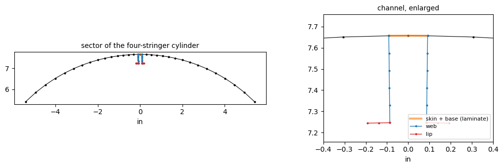
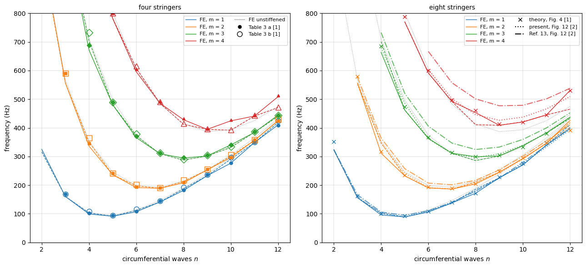
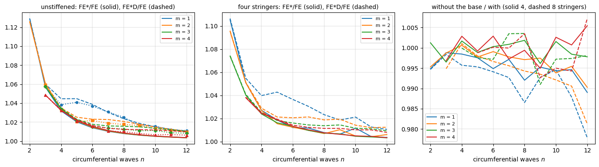
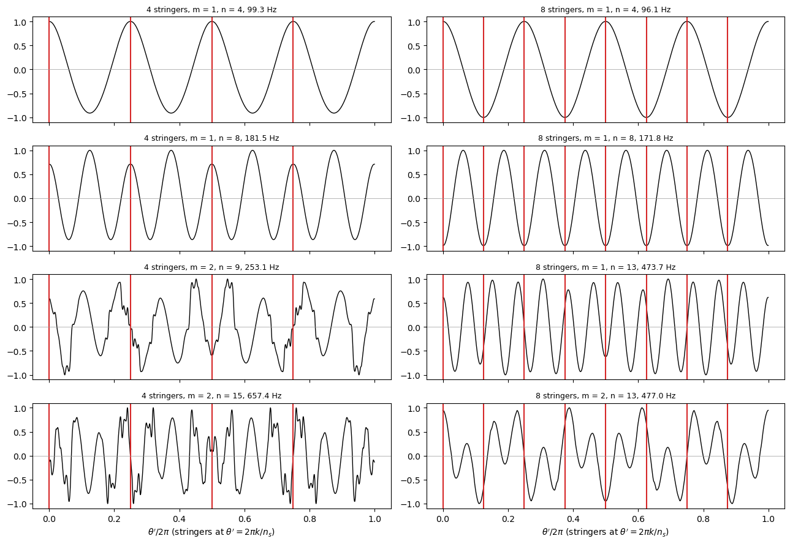
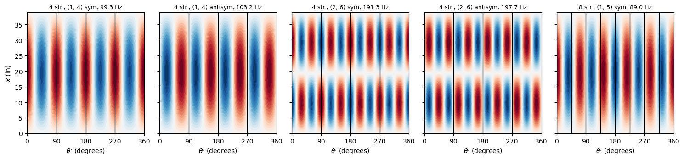
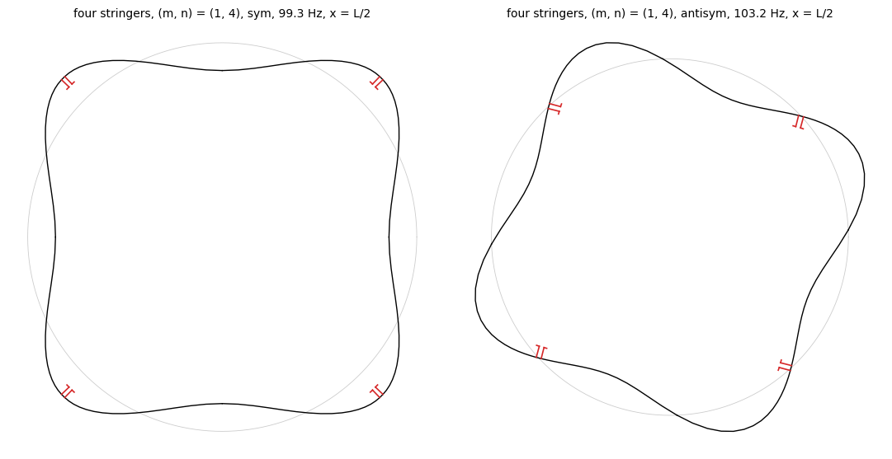

Natural frequencies of cylinders with four and eight channel stringers: Egle and Sewall (1968)#
Egle and Sewall [1] developed a Rayleigh-Ritz vibration analysis of stiffened cylinders in which each stringer is a discrete beam, and applied it to two steel cylinders with few stringers: four and eight equally spaced internal stringers of open (channel, “hat-shaped”) section, freely supported. With few stringers the circumferential modes of different wave numbers \(n\) couple, and each wave number gives two frequencies, one for the modes symmetric and one for the modes antisymmetric about the plane of a stringer [1] (pages 521 and 522). Their Table 3 (page 524) lists the frequencies of the four-stringer cylinder for both families and of the same cylinder without stringers; their Figures 3 and 4 (page 523) plot their analysis of the four- and eight-stringer cylinders against the circumferential wave number. Sewall and Naumann [2] (Figure 12, report page 52, and page 20) analyse the eight-stringer cylinder with the stringers averaged (“smeared”) over the skin, including the eccentricity of the stringers (“Present paper”), and with the equivalent orthotropic shell of their Ref. 13 and Appendix B, which does not account for the eccentricity explicitly.
Here both cylinders, and the cylinder without stringers, are modelled with discrete stringers assembled from plates:
the skin with the BFSC cylinder element of Sanders-type kinematics,
BFSCCylinderSanders;each channel with BFSC plate elements
BFSCPlate2Dof bfscplate2d: two webs normal to the skin and two lips, bent at 90 degrees at the free edges of the webs; the base of the channel, which lies on the skin, is a second layer of the skin elements under it.
One stringer pitch with cyclic symmetry represents the cylinder; each mode is then classified, as in [1], by the largest term of the Fourier series of its normal displacement around the circumference and by its symmetry about the plane of a stringer. The natural frequencies of the problem \((\boldsymbol{K}_{C0} - \omega^2 \boldsymbol{M})\boldsymbol{u} = \boldsymbol{0}\) are compared with every value of Table 3 of [1], with the theory of Figures 3 and 4 of [1] and with both smeared analyses of Figure 12 of [2], the figures digitised.
The model is given by the module channel_cylinder_sector.py, next to this notebook. Besides bfsccylinder, it needs bfscplate2d, composites, SciPy and Matplotlib. The digitised values are in the folder results/.
References
[1] Egle, D. M.; Sewall, J. L., “An analysis of free vibration of orthogonally stiffened cylindrical shells with stiffeners treated as discrete elements”, AIAA Journal 6(3), 518-526, 1968. https://doi.org/10.2514/3.4528
[2] Sewall, J. L.; Naumann, E. C., “An experimental and analytical vibration study of thin cylindrical shells with and without longitudinal stiffeners”, NASA TN D-4705, September 1968. https://ntrs.nasa.gov/citations/19680024266
[1]:
%matplotlib inline
import csv
import os
import time
from multiprocessing import Pool
import numpy as np
import matplotlib.pyplot as plt
from bfsccylinder.version import __version__ as bfsccylinder_version
from bfscplate2d.version import __version__ as bfscplate2d_version
from channel_cylinder_sector import (ChannelCylinderSector, TwoLayerSkin,
solve_case, table, section_properties,
normalize_phase, egle_sewall, DOF, U,
V, W)
print('bfsccylinder', bfsccylinder_version)
print('bfscplate2d', bfscplate2d_version)
bfsccylinder 0.7.1
bfscplate2d 0.5.0
Geometry and material#
Table 1 of [1] (page 522), “4 and 8 stringer case”, in inches, pounds-force and seconds, for “open profile stringers”; the transverse stiffening of the skin by the stringers is not included, \(D_x/D = D_y/D = 1\). Figure 12 of [2] (report page 52) gives the same cylinder rounded, \(R\) = 7.65 in, \(h\) = 0.0183 in, \(L\) = 38.85 in, and the “stiffener detail”: a channel of thickness 0.014 in (0.35 mm), its base on the skin, 0.197 in (5.00 mm) wide over the outer faces of the webs, 0.394 in (10.00 mm) from the inner surface of the base to the top of the lips, and lips of 0.098 in (2.50 mm) outside the webs, pointing away from the channel. Page 20 of [2] says that the models were made of 0.0183 in sheet steel and that the stringers are of “hat-shaped cross section”.
[2]:
# Table 1 of [1], page 522 (4 and 8 stringer case); in, lbf, s
R = 7.657 # in
L = 38.85 # in, a of [1]
h = 1.826e-2 # in
E = 29.0e6 # psi, shell and stringers
rho = 7.34e-4 # lbf s^2/in^4
nu = 0.30
G = E/(2*(1 + nu))
table1 = dict(A=1.627e-2, zbar=-0.2082, d=0.2576, p=0.2750, GJ=11.31)
# stringer detail of Figure 12 of [2], report page 52; in
t = 0.014 # thickness of the channel
b_out = 0.197 # over the outer faces of the webs
web_in = 0.394 # inner surface of the base to the top of the lips
lip_out = 0.098 # lip, outside the outer face of the web
Stringer section#
Middle lines of the drawing. With \(z\) along the outward normal from the middle surface of the skin (the stringers are inside, \(z < 0\)), the middle surface of the base is at \(z_b = -(h/2 + t/2)\) and that of the lips at \(z_l = z_b - 0.394\) in; the webs are \(b = 0.197 - t\) apart (middle surfaces) and a lip is \(b_l = 0.098 + t/2\) wide from the middle surface of its web. The section of the drawing is then three rectangles of thickness \(t\) along these middle lines (base \(b\), webs \(|z_l - z_b|\), lips \(b_l\)).
Model. The plate of a web is tied to the skin along its root, on the middle surface of the skin (the nodes of the BFSC elements have no offset), so that it goes from \(z = 0\) to \(z_l\), \(H_w = |z_l|\) high: it overlaps the skin and the base over \(h/2 + t/2\). The lips are plates of width \(b_l\) at \(z_l\). The base is not a plate: a plate parallel to the skin, offset by \(-(h/2 + t/2)\), would need its axial displacement tied to \(u - z\,w_{,x}\) of the skin, and the derivative of this tie along \(x\), needed by the degree of freedom \(u_{,x}\) of the BFSC elements, contains \(w_{,xx}\), which is not a degree of freedom; a plate on the middle surface would lose its eccentricity. Instead the skin elements between the two webs are a laminate of two layers, the skin and the base, with the stiffnesses \(\boldsymbol{A}\), \(\boldsymbol{B}\), \(\boldsymbol{D}\) about the middle surface of the skin, which is exact for a base bonded to the skin over its whole width, and the mass of both layers (the mass matrix of the element has no eccentricity: the offset of the mass of the base, 0.016 in, is neglected).
The properties of both sections against Table 1 of [1]: the area \(A_s\), the centroid \(\bar{z}_s\), the radius of gyration \(d_s'\) for bending in the plane \((x, r)\), the polar radius of gyration \(p_s'\) and the torsional stiffness \((GJ)_s\), with the radii both about the centroid and about the middle surface of the skin (and the point of it under the stringer). The torsional stiffness is that of the thin rectangles, \(G \sum b t^3/3\), the base included (in the model the base works in the laminate with the skin).
[3]:
zb = -(h/2 + t/2) # middle surface of the base
zl = zb - web_in # middle surface of the lips
b = b_out - t # between the middle surfaces of the webs
bl = lip_out + t/2 # lip, from the middle surface of the web
Hw = -zl # web plates of the model, from the skin middle surface
drawing = [(0., zb, b, t), (-b/2, (zb + zl)/2, t, web_in),
(b/2, (zb + zl)/2, t, web_in), (-(b + bl)/2, zl, bl, t),
((b + bl)/2, zl, bl, t)]
model_section = [(0., zb, b, t), (-b/2, zl/2, t, Hw), (b/2, zl/2, t, Hw),
(-(b + bl)/2, zl, bl, t), ((b + bl)/2, zl, bl, t)]
sec = {'drawing': section_properties(drawing, G),
'model': section_properties(model_section, G)}
print('b = %.4f in, b_l = %.4f in, z_b = %.5f in, z_l = %.5f in, H_w = %.5f in'
% (b, bl, zb, zl, Hw))
rows = [('A_s (in^2)', 'A', table1['A']),
('z_s (in), from the skin middle surface', 'zbar', table1['zbar']),
('d_s about the centroid (in)', 'dc', table1['d']),
('d_s about the skin middle surface (in)', 'd0', table1['d']),
('p_s about the centroid (in)', 'pc', table1['p']),
('p_s about the skin middle surface (in)', 'p0', table1['p']),
('(GJ)_s (lbf in^2)', 'GJ', table1['GJ'])]
print('\n%-40s %10s | %10s %7s | %10s %7s' % ('', 'Table 1', 'drawing',
'diff', 'model', 'diff'))
for label, key, ref in rows:
a, m = sec['drawing'][key], sec['model'][key]
print('%-40s %10.5g | %10.5g %+6.1f%% | %10.5g %+6.1f%%'
% (label, ref, a, 100*(a/ref - 1), m, 100*(m/ref - 1)))
print('\nz_s of the drawing from the inner surface of the skin: %.4f in'
% (sec['drawing']['zbar'] + h/2))
for key in ['drawing', 'model']:
s = sec[key]
print('%-8s E I0 = %.4g lbf in^2, E A d_s^2 of Table 1 (d_s about the '
'skin) = %.4g lbf in^2' % (key, E*s['I0'], E*table1['A']*table1['d']**2))
b = 0.1830 in, b_l = 0.1050 in, z_b = -0.01613 in, z_l = -0.41013 in, H_w = 0.41013 in
Table 1 | drawing diff | model diff
A_s (in^2) 0.01627 | 0.016534 +1.6% | 0.016986 +4.4%
z_s (in), from the skin middle surface -0.2082 | -0.21763 +4.5% | -0.21206 +1.9%
d_s about the centroid (in) 0.2576 | 0.14673 -43.0% | 0.14865 -42.3%
d_s about the skin middle surface (in) 0.2576 | 0.26248 +1.9% | 0.25897 +0.5%
p_s about the centroid (in) 0.275 | 0.17723 -35.6% | 0.17871 -35.0%
p_s about the skin middle surface (in) 0.275 | 0.28067 +2.1% | 0.27732 +0.8%
(GJ)_s (lbf in^2) 11.31 | 12.049 +6.5% | 12.378 +9.4%
z_s of the drawing from the inner surface of the skin: -0.2085 in
drawing E I0 = 3.303e+04 lbf in^2, E A d_s^2 of Table 1 (d_s about the skin) = 3.131e+04 lbf in^2
model E I0 = 3.304e+04 lbf in^2, E A d_s^2 of Table 1 (d_s about the skin) = 3.131e+04 lbf in^2
The section of the drawing has an area 1.6 % larger than \(A_s\) of Table 1. The radii of gyration of Table 1 match those of the drawing about the middle surface of the skin (within 2 %), not about the centroid (35 to 43 % smaller), although the nomenclature of [1] (page 518) defines \(d_s'\) about a centroidal axis; the strain energy of the stringers of [1], Eq. (5) (page 519), with the terms \(u_{,x}^2 - 2\bar{z} u_{,x} w_{,xx} + (d'_s)^2 w_{,xx}^2\), does need \(d_s'\) about the middle surface of the skin, so Table 1 is consistent with Eq. (5). The centroid of Table 1, 0.2082 in, matches the distance of the centroid of the drawing from the inner surface of the skin, 0.2085 in, rather than from its middle surface, 0.2176 in.
The section of the model is larger than the drawing by the overlap of the webs with the skin and the base: \(A_s\) +4.4 % and \(E I_0\) +5.5 % against Table 1. These are small against the skin: the four (eight) stringers add 7.7 % (15.5 %) to the mass of the skin.
The laminate of the skin under the base, against the skin alone:
[4]:
skin = TwoLayerSkin(h, 0., E, nu)
lam = TwoLayerSkin(h, t, E, nu, side='internal')
for k in ['A11', 'A66', 'B11', 'D11', 'D66']:
print('%s: skin %10.4g, skin + base %10.4g' % (k, getattr(skin, k),
getattr(lam, k)))
A11: skin 5.819e+05, skin + base 1.028e+06
A66: skin 2.037e+05, skin + base 3.598e+05
B11: skin 0, skin + base -7196
D11: skin 16.17, skin + base 139.5
D66: skin 5.659, skin + base 48.84
Section scaled to the area of Table 1. As a variant, the wall thickness of the channel is scaled, the outer dimensions of the drawing kept, until the area of the section of the model (webs from the middle surface of the skin, as above) equals \(A_s\) of Table 1; the other properties follow:
[5]:
from scipy.optimize import brentq
def channel_sections(tt):
zb_ = -(h/2 + tt/2)
zl_ = zb_ - web_in
b_, bl_ = b_out - tt, lip_out + tt/2
return [(0., zb_, b_, tt), (-b_/2, zl_/2, tt, -zl_), (b_/2, zl_/2, tt, -zl_),
(-(b_ + bl_)/2, zl_, bl_, tt), ((b_ + bl_)/2, zl_, bl_, tt)], dict(b=b_, Hw=-zl_, bl=bl_)
tA = brentq(lambda tt: section_properties(channel_sections(tt)[0], G)['A'] - table1['A'], 0.010, 0.016)
rectsA, geoA = channel_sections(tA)
sec['scaled'] = section_properties(rectsA, G)
print('scaled thickness t = %.5f in (drawing %.3f in, %+.1f %%)' % (tA, t, 100*(tA/t - 1)))
print('%-40s %10s | %10s %7s | %10s %7s' % ('', 'Table 1', 'model', 'diff', 'scaled', 'diff'))
for label, key, ref in rows:
a, m_ = sec['model'][key], sec['scaled'][key]
print('%-40s %10.5g | %10.5g %+6.1f%% | %10.5g %+6.1f%%'
% (label, ref, a, 100*(a/ref - 1), m_, 100*(m_/ref - 1)))
scaled thickness t = 0.01342 in (drawing 0.014 in, -4.2 %)
Table 1 | model diff | scaled diff
A_s (in^2) 0.01627 | 0.016986 +4.4% | 0.01627 +0.0%
z_s (in), from the skin middle surface -0.2082 | -0.21206 +1.9% | -0.21168 +1.7%
d_s about the centroid (in) 0.2576 | 0.14865 -42.3% | 0.14861 -42.3%
d_s about the skin middle surface (in) 0.2576 | 0.25897 +0.5% | 0.25864 +0.4%
p_s about the centroid (in) 0.275 | 0.17871 -35.0% | 0.17877 -35.0%
p_s about the skin middle surface (in) 0.275 | 0.27732 +0.8% | 0.27707 +0.8%
(GJ)_s (lbf in^2) 11.31 | 12.378 +9.4% | 10.889 -3.7%
Model: one stringer pitch with cyclic symmetry#
The sector \(0 \le \theta \le \phi = 2\pi/n_s\) has the channel at its middle, \(\theta_c = \phi/2\), and the edges of the sector halfway between two stringers. Across the sector the skin has nbay elements from each edge to the nearest web, graded (the largest three times the smallest, the smallest next to the web), and two laminate elements under the base, between the two webs; along \(x\), nx nodes. Each web has nweb elements along its height, each lip nlip elements
across. The webs are tied to the skin and the lips to the webs as rigid joints (the ties are written in the docstring of the module): the channel is assumed bonded to the skin along the two lines of the webs and over the base.
Cyclic symmetry. The degrees of freedom of the sector \(k\) of a mode are those of the sector 0 multiplied by \(e^{i j k \phi}\); the nodes of the edge \(\theta = \phi\) are eliminated with \(\boldsymbol{u}(\phi) = e^{i j \phi}\boldsymbol{u}(0)\), which gives one Hermitian eigenvalue problem per Bloch index \(j = 0, 1, \ldots, n_s/2\). A Bloch index contains every circumferential wave number \(n = |j + k n_s|\) (\(k\) integer): with \(n_s = 4\), \(j = 0\) contains \(n\) = 0, 4, 8, 12, …, \(j = 1\) contains \(n\) = 1, 3, 5, 7, …, \(j = 2\) contains \(n\) = 2, 6, 10, …. This is the coupling rule of [1], Eq. (13) (page 522): harmonics \(n\) and \(n'\) are coupled when \(n \pm n'\) is a multiple of \(n_s\).
Symmetric and antisymmetric modes. The cylinder is also symmetric about the plane of each stringer. For \(j = 0\) and \(j = n_s/2\) the problem is real and each mode is either symmetric or antisymmetric about that plane, with different frequencies: these are the even \(n\) for \(n_s = 4\) (stringers at the antinodes or at the nodes of \(\cos n\theta\)). For \(0 < j < n_s/2\) the problem is complex and each eigenvalue is a pair of modes, a symmetric and an antisymmetric one of equal frequency: the odd \(n\) for \(n_s = 4\), as [1] explains (page 523), and \(n\) not a multiple of 4 for \(n_s = 8\).
Classification. As in [1] (page 522), each mode is named after the largest coefficient of the series of \(w\) of [1], Eq. (9), \(w = \sum_m \sum_n (a_{mn} \cos n\theta' + b_{mn} \sin n\theta') \sin(m\pi
x/L)\), \(\theta'\) measured from a stringer: the normal displacement of the skin is rebuilt around the whole circumference, interpolated between the nodes with its slope, and expanded numerically (classify of the module). The ratio of the second largest to the largest amplitude \(\sqrt{a_{mn}^2 + b_{mn}^2}\) measures the coupling, as in [1] (page 524). For each \((m, n)\) and family the lowest mode with that name is taken.
End conditions. “Freely supported” in [1] (page 520): the pinned-end beam functions give \(v = w = 0\), no bending moment and no axial force at the ends of the shell and of the stringers. In the model, at both ends, \(v\), \(w\) and their derivatives along the edge are zero for the skin, and the displacements normal to the axis for the plates; \(u\) is free. The rigid-body axial translation, at zero frequency, is left out.
The cross-section of the sector of the four-stringer cylinder with the finest mesh used below (nodes as dots), and the channel enlarged:
[6]:
channel = dict(t=t, b=b, Hw=Hw, bl=bl, side='internal', base='laminate')
common = dict(R=R, L=L, h=h, E=E, nu=nu, rho=rho)
def plot_section_mesh(ax, model, zoom=False):
R = model.R
th = model.theta
ax.plot(R*np.sin(th - model.phi/2), R*np.cos(th - model.phi/2), '.-',
color='k', ms=4, lw=0.8)
jw = model.j_webs
ax.plot(R*np.sin(th[jw[0]:jw[1] + 1] - model.phi/2),
R*np.cos(th[jw[0]:jw[1] + 1] - model.phi/2), 'C1-', lw=3,
alpha=0.6, label='skin + base (laminate)')
for s in range(2):
tw = th[jw[s]] - model.phi/2
r = R + model.Yweb
ax.plot(r*np.sin(tw), r*np.cos(tw), 'C0.-', ms=4, lw=1,
label='web' if s == 0 else None)
rl = R + model.Yweb[-1]
tl = tw + model.Ylip[s]/rl
ax.plot(rl*np.sin(tl), rl*np.cos(tl), 'C3.-', ms=4, lw=1,
label='lip' if s == 0 else None)
ax.set_aspect('equal')
if zoom:
ax.set_xlim(-0.4, 0.4)
ax.set_ylim(R - 0.5, R + 0.1)
ax.set_xlabel('in')
demo = ChannelCylinderSector(nstringers=4, nx=5, nbay=15, ratio=3.,
channel=channel, nbase=2, nweb=5, nlip=2,
**common)
fig, axes = plt.subplots(1, 2, figsize=(11, 3.5))
plot_section_mesh(axes[0], demo)
axes[0].set_title('sector of the four-stringer cylinder', fontsize=10)
plot_section_mesh(axes[1], demo, zoom=True)
axes[1].set_title('channel, enlarged', fontsize=10)
axes[1].legend(fontsize=8, loc='lower right')
plt.tight_layout()
plt.show()

Published values#
Table 3 of [1] (page 524): four stringers, columns a (symmetric modes), b (antisymmetric modes) and c (unstiffened), \(m\) = 1 to 4, \(n\) = 3 to 12; typed from the page and checked against the PDF text layer.
Figures 3 and 4 of [1] (page 523): four and eight stringers, theory (Figure 3: symmetric, solid, and antisymmetric, dashed; Figure 4: symmetric only).
Figure 12 of [2] (report page 52): eight stringers, simply supported, the two smeared analyses.
The curves were read at integer \(n\) from 300 dpi images of the scanned pages, with the axes calibrated on the tick marks. Reading precision (stated in the header of each file, with notes per value): Figures 3 and 4 of [1], about 1 Hz per pixel, curves $:nbsphinx-math:pm`$2 to 3 Hz; Figure 12 of [2], 0.45 Hz per pixel, curves $:nbsphinx-math:pm`$2 Hz where flat (more on the steep parts). Where the theory of Figure 3 of [1] is hidden by a plotted symbol at integer \(n\) it was not read (Table 3 gives it).
[7]:
def read_csv(path):
with open(path, encoding='utf-8') as f:
lines = [line for line in f if not line.startswith('#')]
return list(csv.DictReader(lines))
table3 = {} # (m, n, family) -> Hz
theory = {'fig3': {}, 'fig4': {}} # (m, n, family) -> Hz
for r in read_csv('results/egle1968_few_stringers.csv'):
key = (int(r['m']), int(r['n']))
f = float(r['f_Hz'])
if r['source'] == 'table3':
table3[key + (r['symmetry'],)] = f
else:
theory[r['source']][key + (r['symmetry'],)] = f
fig12 = {'present': {}, 'ref13': {}} # (m, n) -> Hz
for r in read_csv('results/sewall1968_fig12_eight_stringers.csv'):
fig12[r['kind']][(int(r['m']), int(r['n']))] = float(r['f_Hz'])
print('Table 3 of [1]:', len(table3), 'values')
print('Figure 3 of [1]: theory', len(theory['fig3']))
print('Figure 4 of [1]: theory', len(theory['fig4']))
print('Figure 12 of [2]: present', len(fig12['present']), ', Ref. 13',
len(fig12['ref13']))
Table 3 of [1]: 120 values
Figure 3 of [1]: theory 33
Figure 4 of [1]: theory 36
Figure 12 of [2]: present 37 , Ref. 13 37
Analyses and mesh convergence#
Three cylinders: four stringers, eight stringers and no stringers. The unstiffened cylinder is modelled by a sector of \(6°\) with the harmonic \(n = j\) directly (\(n_s = 60\) without stringers, no coupling for \(n < 30\)). Each analysis computes all the modes up to 10 % above the largest published frequency it is compared with. Four meshes per cylinder, (nx, nbay, nweb, nlip) ((nx, nbay) for the unstiffened sector), and on the finest mesh three variants:
FE*, without the in-surface inertia of the skin: the mass of \(u\), \(v\) and their derivatives of the skin removed (the plates keep theirs), the simplification of the analysis of [1] (page 522), which “for low values of \(n\) should be expected to be somewhat higher than the correct values”;
FE*D, the assumptions of [1]: as FE*, with the skin element of Donnell-type kinematics,
BFSCCylinder, as the strain-displacement relations of [1], Eq. (1) (page 519), instead of the Sanders-type element (in the ties of the webs the rotation of the skin is then \(-w_{,y}\));without the base: the skin under the base is the skin alone, to show how much the base adds.
The analyses run in parallel processes.
[8]:
mesh4 = [(21, 6, 2, 1), (31, 9, 3, 1), (41, 12, 4, 2), (51, 15, 5, 2)]
mesh8 = [(21, 4, 2, 1), (31, 6, 3, 1), (41, 8, 4, 2), (51, 10, 5, 2)]
meshU = [(21, 1), (31, 2), (41, 3), (51, 4)]
fmax = {4: 1.1*max(list(table3.values())
+ list(theory['fig3'].values())),
8: 1.1*max(list(theory['fig4'].values())
+ list(fig12['present'].values())
+ list(fig12['ref13'].values()))}
fmax[0] = 1.1*max(f for (m, n, fam), f in table3.items() if fam == 'none')
print('fmax (Hz):', {k: round(v) for k, v in fmax.items()})
def case(ns, mesh, variant='', keep_modes=False):
c = dict(common, nx=mesh[0], nbay=mesh[1], keep_modes=keep_modes,
skin_inplane_inertia=variant in ('', 'no base', 'scaled'),
kinematics='donnell' if variant == 'Donnell' else 'sanders')
if ns == 0:
c.update(nstringers=60, fmax=fmax[0], js=range(1, 14))
else:
ch = dict(channel, base='none' if variant == 'no base' else
'laminate')
if variant.startswith('scaled'):
ch.update(geoA, t=tA)
c.update(nstringers=ns, ratio=3., channel=ch, nbase=2,
nweb=mesh[2], nlip=mesh[3], fmax=fmax[ns])
return c
jobs = {}
for ns, meshes in [(4, mesh4), (8, mesh8), (0, meshU)]:
for mesh in meshes:
jobs[(ns, mesh, '')] = case(ns, mesh, keep_modes=(mesh == meshes[-1]))
for variant in ['no in-surface inertia', 'Donnell', 'no base', 'scaled',
'scaled, no in-surface inertia']:
if ns == 0 and variant in ('no base', 'scaled',
'scaled, no in-surface inertia'):
continue
jobs[(ns, meshes[-1], variant)] = case(ns, meshes[-1], variant)
# largest analyses first
keys = sorted(jobs, key=lambda k: -k[1][0]*k[1][1]*(2 if k[0] == 4 else 1))
t0 = time.time()
with Pool(min(8, os.cpu_count())) as pool:
out = pool.map(solve_case, [jobs[k] for k in keys], chunksize=1)
runs = {k: dict(spec=o[1], dofs=o[2], time=o[3]) for k, o in zip(keys, out)}
print('%.0f s elapsed' % (time.time() - t0))
fmax (Hz): {4: 1843, 8: 866, 0: 1843}
397 s elapsed
The compared frequencies are, for four stringers, the 80 values of the families a and b of Table 3 of [1]; for eight stringers, both families of every \((m, n)\) of Figures 4 of [1] and 12 of [2], \(n \le 12\); for the unstiffened cylinder, the 40 values of column c of Table 3. For each mesh: the number of complex degrees of freedom of the reduced sector (\(j = 0\)), the run time, and the largest change of the compared frequencies from the previous mesh.
[9]:
def ftable(spec, ns):
"""(m, n, family) -> frequency of the lowest mode of that name"""
return {k: d['f'] for k, d in table(spec, max(ns, 60) if ns == 0
else ns).items()}
compared = {
4: sorted(k for k in table3 if k[2] in ('sym', 'antisym')),
8: sorted({(m, n, fam) for (m, n) in
{k[:2] for k in theory['fig4']}
| {k[:2] for k in fig12['present']}
| {k[:2] for k in fig12['ref13']}
for fam in ('sym', 'antisym') if n <= 12}),
0: sorted((m, n, 'sym') for (m, n, fam) in table3 if fam == 'none'),
}
final = {4: mesh4[-1], 8: mesh8[-1], 0: meshU[-1]}
names = {4: 'four stringers', 8: 'eight stringers', 0: 'unstiffened'}
for ns, meshes in [(4, mesh4), (8, mesh8), (0, meshU)]:
print('\n%s, %d compared frequencies' % (names[ns], len(compared[ns])))
print('mesh dofs time (s) missing largest change')
prev = None
for mesh in meshes:
r = runs[(ns, mesh, '')]
f = ftable(r['spec'], ns)
vals = np.array([f.get(k, np.nan) for k in compared[ns]])
change = ''
if prev is not None:
d = np.abs(vals/prev - 1)
i = np.nanargmax(d)
change = '%.2f %% at (m, n) = %s' % (100*d[i],
compared[ns][i][:2])
print('%-18s %7d %9.0f %8d %s' % (mesh, r['dofs'], r['time'],
np.isnan(vals).sum(), change))
prev = vals
four stringers, 80 compared frequencies
mesh dofs time (s) missing largest change
(21, 6, 2, 1) 4200 23 0
(31, 9, 3, 1) 8696 63 0 4.91 % at (m, n) = (3, 3)
(41, 12, 4, 2) 15596 157 0 1.56 % at (m, n) = (4, 6)
(51, 15, 5, 2) 23492 290 0 0.36 % at (m, n) = (4, 10)
eight stringers, 76 compared frequencies
mesh dofs time (s) missing largest change
(21, 4, 2, 1) 3392 5 0
(31, 6, 3, 1) 6884 20 0 2.31 % at (m, n) = (4, 12)
(41, 8, 4, 2) 12380 56 0 0.64 % at (m, n) = (3, 8)
(51, 10, 5, 2) 18472 121 0 0.27 % at (m, n) = (3, 8)
unstiffened, 40 compared frequencies
mesh dofs time (s) missing largest change
(21, 1) 404 1 0
(31, 2) 1208 2 0 1.80 % at (m, n) = (4, 9)
(41, 3) 2412 5 0 0.55 % at (m, n) = (4, 9)
(51, 4) 4016 9 0 0.24 % at (m, n) = (4, 9)
The finest meshes are used below: from the previous mesh, every compared frequency changes by less than 1 % (last line of each cylinder).
Four stringers against Table 3 of [1]#
The relative difference is (FE - reference)/reference. FE is the model, FE* the model without the in-surface inertia of the skin, FE*D the same with Donnell-type kinematics (the assumptions of [1]). For odd \(n\) the symmetric and antisymmetric frequencies are equal, in [1] and in the model (a pair of modes of a complex Bloch index).
[10]:
res = {k: ftable(r['spec'], k[0]) for k, r in runs.items()
if k[1] == final[k[0]]}
fe4, fe4s = res[(4, final[4], '')], res[(4, final[4], 'no in-surface inertia')]
fe4b = res[(4, final[4], 'no base')]
fe4d = res[(4, final[4], 'Donnell')]
fe8, fe8s = res[(8, final[8], '')], res[(8, final[8], 'no in-surface inertia')]
fe8b = res[(8, final[8], 'no base')]
fe8d = res[(8, final[8], 'Donnell')]
feU, feUs = res[(0, final[0], '')], res[(0, final[0], 'no in-surface inertia')]
feUd = res[(0, final[0], 'Donnell')]
summary = []
def rel(a, b):
return a/b - 1
for fam, col in [('sym', 'a'), ('antisym', 'b')]:
print('\n%s modes, Table 3 column %s' % (fam, col))
print(' m n | Table 3 %s | FE diff | FE* diff | FE*D diff'
% col)
d, ds, dd = [], [], []
for m in range(1, 5):
for n in range(3, 13):
ref = table3[(m, n, fam)]
vals = [fe.get((m, n, fam), np.nan) for fe in (fe4, fe4s, fe4d)]
for x, f in zip((d, ds, dd), vals):
x.append(rel(f, ref))
print('%2d %3d | %10.1f |' % (m, n, ref) + ''.join(
' %7.1f %+5.1f%% |' % (f, 100*rel(f, ref)) for f in vals))
summary += [('4 stringers, FE vs Table 3 %s (%s)' % (col, fam), d),
('4 stringers, FE* vs Table 3 %s (%s)' % (col, fam), ds),
('4 stringers, FE*D vs Table 3 %s (%s)' % (col, fam), dd)]
sym modes, Table 3 column a
m n | Table 3 a | FE diff | FE* diff | FE*D diff
1 3 | 169.0 | 160.2 -5.2% | 168.4 -0.3% | 169.0 +0.0% |
1 4 | 103.0 | 99.3 -3.6% | 102.0 -0.9% | 103.3 +0.3% |
1 5 | 94.7 | 91.5 -3.4% | 93.2 -1.6% | 95.4 +0.7% |
1 6 | 109.0 | 107.1 -1.7% | 108.4 -0.5% | 111.0 +1.8% |
1 7 | 145.0 | 141.0 -2.8% | 142.6 -1.6% | 145.3 +0.2% |
1 8 | 183.0 | 181.5 -0.8% | 183.0 -0.0% | 185.8 +1.5% |
1 9 | 236.0 | 232.8 -1.3% | 234.3 -0.7% | 237.2 +0.5% |
1 10 | 278.0 | 276.7 -0.5% | 280.0 +0.7% | 282.6 +1.7% |
1 11 | 350.0 | 348.3 -0.5% | 349.8 -0.0% | 352.7 +0.8% |
1 12 | 408.0 | 410.4 +0.6% | 411.9 +1.0% | 414.8 +1.7% |
2 3 | 591.0 | 556.4 -5.9% | 584.8 -1.1% | 585.0 -1.0% |
2 4 | 346.0 | 336.1 -2.9% | 345.2 -0.2% | 345.9 -0.0% |
2 5 | 241.0 | 236.5 -1.9% | 240.1 -0.4% | 241.5 +0.2% |
2 6 | 194.0 | 191.3 -1.4% | 193.7 -0.1% | 195.3 +0.7% |
2 7 | 191.0 | 189.0 -1.1% | 190.8 -0.1% | 193.0 +1.0% |
2 8 | 209.0 | 208.1 -0.4% | 209.6 +0.3% | 212.0 +1.4% |
2 9 | 256.0 | 253.1 -1.1% | 255.7 -0.1% | 258.1 +0.8% |
2 10 | 297.0 | 296.7 -0.1% | 298.2 +0.4% | 301.0 +1.3% |
2 11 | 358.0 | 356.3 -0.5% | 357.8 -0.1% | 360.6 +0.7% |
2 12 | 424.0 | 424.5 +0.1% | 427.1 +0.7% | 429.8 +1.4% |
3 3 | 1137.0 | 1090.8 -4.1% | 1134.7 -0.2% | 1135.4 -0.1% |
3 4 | 688.0 | 671.7 -2.4% | 687.8 -0.0% | 688.6 +0.1% |
3 5 | 490.0 | 480.9 -1.8% | 488.8 -0.2% | 489.7 -0.1% |
3 6 | 371.0 | 366.0 -1.4% | 370.9 -0.0% | 371.9 +0.2% |
3 7 | 313.0 | 309.8 -1.0% | 312.8 -0.1% | 314.3 +0.4% |
3 8 | 297.0 | 294.4 -0.9% | 296.5 -0.2% | 298.4 +0.5% |
3 9 | 304.0 | 302.0 -0.7% | 304.0 -0.0% | 306.3 +0.8% |
3 10 | 341.0 | 340.3 -0.2% | 341.9 +0.3% | 344.3 +1.0% |
3 11 | 386.0 | 384.2 -0.5% | 385.8 -0.1% | 388.5 +0.6% |
3 12 | 443.0 | 444.0 +0.2% | 445.5 +0.6% | 448.1 +1.2% |
4 3 | 1643.0 | 1594.8 -2.9% | 1655.3 +0.8% | 1656.1 +0.8% |
4 4 | 1089.0 | 1057.7 -2.9% | 1083.5 -0.5% | 1084.2 -0.4% |
4 5 | 801.0 | 782.2 -2.3% | 797.0 -0.5% | 797.4 -0.5% |
4 6 | 604.0 | 595.8 -1.4% | 603.7 -0.0% | 604.4 +0.1% |
4 7 | 491.0 | 486.2 -1.0% | 491.2 +0.0% | 492.2 +0.2% |
4 8 | 432.0 | 428.4 -0.8% | 431.7 -0.1% | 433.3 +0.3% |
4 9 | 396.0 | 394.8 -0.3% | 397.3 +0.3% | 399.3 +0.8% |
4 10 | 428.0 | 424.5 -0.8% | 426.6 -0.3% | 428.8 +0.2% |
4 11 | 444.0 | 441.1 -0.6% | 443.2 -0.2% | 445.6 +0.4% |
4 12 | 513.0 | 508.5 -0.9% | 510.3 -0.5% | 512.6 -0.1% |
antisym modes, Table 3 column b
m n | Table 3 b | FE diff | FE* diff | FE*D diff
1 3 | 169.0 | 160.2 -5.2% | 168.4 -0.3% | 169.0 +0.0% |
1 4 | 108.0 | 103.2 -4.4% | 106.5 -1.4% | 107.8 -0.2% |
1 5 | 94.7 | 91.5 -3.4% | 93.2 -1.6% | 95.4 +0.7% |
1 6 | 116.0 | 112.0 -3.4% | 113.6 -2.1% | 116.3 +0.3% |
1 7 | 145.0 | 141.0 -2.8% | 142.6 -1.6% | 145.3 +0.2% |
1 8 | 192.0 | 187.4 -2.4% | 188.9 -1.6% | 191.8 -0.1% |
1 9 | 236.0 | 232.8 -1.3% | 234.3 -0.7% | 237.2 +0.5% |
1 10 | 297.0 | 290.7 -2.1% | 292.5 -1.5% | 295.3 -0.6% |
1 11 | 350.0 | 348.3 -0.5% | 349.8 -0.0% | 352.7 +0.8% |
1 12 | 425.0 | 418.4 -1.5% | 419.9 -1.2% | 422.7 -0.5% |
2 3 | 591.0 | 556.4 -5.9% | 584.8 -1.1% | 585.0 -1.0% |
2 4 | 365.0 | 350.5 -4.0% | 362.3 -0.7% | 362.6 -0.7% |
2 5 | 241.0 | 236.5 -1.9% | 240.1 -0.4% | 241.5 +0.2% |
2 6 | 202.0 | 197.7 -2.1% | 200.6 -0.7% | 202.2 +0.1% |
2 7 | 191.0 | 189.0 -1.1% | 190.8 -0.1% | 193.0 +1.0% |
2 8 | 217.0 | 212.7 -2.0% | 214.5 -1.2% | 217.1 +0.0% |
2 9 | 256.0 | 253.1 -1.1% | 255.7 -0.1% | 258.1 +0.8% |
2 10 | 306.0 | 301.6 -1.4% | 303.1 -0.9% | 306.0 -0.0% |
2 11 | 358.0 | 356.3 -0.5% | 357.8 -0.1% | 360.6 +0.7% |
2 12 | 430.0 | 425.0 -1.2% | 426.5 -0.8% | 429.4 -0.1% |
3 3 | 1137.0 | 1090.8 -4.1% | 1134.7 -0.2% | 1135.4 -0.1% |
3 4 | 733.0 | 703.7 -4.0% | 725.0 -1.1% | 725.1 -1.1% |
3 5 | 490.0 | 480.9 -1.8% | 488.8 -0.2% | 489.7 -0.1% |
3 6 | 379.0 | 372.6 -1.7% | 378.3 -0.2% | 379.2 +0.0% |
3 7 | 313.0 | 309.8 -1.0% | 312.8 -0.1% | 314.3 +0.4% |
3 8 | 290.0 | 287.1 -1.0% | 289.5 -0.2% | 291.6 +0.5% |
3 9 | 304.0 | 302.0 -0.7% | 304.0 -0.0% | 306.3 +0.8% |
3 10 | 334.0 | 331.5 -0.7% | 333.2 -0.2% | 335.9 +0.6% |
3 11 | 386.0 | 384.2 -0.5% | 385.8 -0.1% | 388.5 +0.6% |
3 12 | 444.0 | 440.1 -0.9% | 441.7 -0.5% | 444.5 +0.1% |
4 3 | 1643.0 | 1594.8 -2.9% | 1655.3 +0.8% | 1656.1 +0.8% |
4 4 | 1144.0 | 1091.5 -4.6% | 1114.0 -2.6% | 1114.3 -2.6% |
4 5 | 801.0 | 782.2 -2.3% | 797.0 -0.5% | 797.4 -0.5% |
4 6 | 615.0 | 608.6 -1.0% | 615.5 +0.1% | 616.7 +0.3% |
4 7 | 491.0 | 486.2 -1.0% | 491.2 +0.0% | 492.2 +0.2% |
4 8 | 415.0 | 412.4 -0.6% | 415.9 +0.2% | 417.4 +0.6% |
4 9 | 396.0 | 394.8 -0.3% | 397.3 +0.3% | 399.3 +0.8% |
4 10 | 393.0 | 391.7 -0.3% | 393.8 +0.2% | 396.2 +0.8% |
4 11 | 444.0 | 441.1 -0.6% | 443.2 -0.2% | 445.6 +0.4% |
4 12 | 472.0 | 470.7 -0.3% | 472.4 +0.1% | 475.1 +0.7% |
The splitting of the even \(n\) into two frequencies, (sym - antisym)/antisym, in [1] and in the model:
[11]:
print(' m |' + ''.join(' n = %-2d ' % n for n in range(4, 13, 2)))
print(' |' + ' [1] FE '*5)
for m in range(1, 5):
row = '%2d |' % m
for n in range(4, 13, 2):
s1 = table3[(m, n, 'sym')]/table3[(m, n, 'antisym')] - 1
s2 = fe4[(m, n, 'sym')]/fe4[(m, n, 'antisym')] - 1
row += ' %+5.1f%% %+5.1f%% ' % (100*s1, 100*s2)
print(row)
m | n = 4 n = 6 n = 8 n = 10 n = 12
| [1] FE [1] FE [1] FE [1] FE [1] FE
1 | -4.6% -3.8% -6.0% -4.4% -4.7% -3.1% -6.4% -4.8% -4.0% -1.9%
2 | -5.2% -4.1% -4.0% -3.2% -3.7% -2.2% -2.9% -1.6% -1.4% -0.1%
3 | -6.1% -4.5% -2.1% -1.8% +2.4% +2.5% +2.1% +2.7% -0.2% +0.9%
4 | -4.8% -3.1% -1.8% -2.1% +4.1% +3.9% +8.9% +8.4% +8.7% +8.0%
The analysis of [1], recomputed. The model splits the even \(n\) less than Table 3 of [1] at some \((m, n)\), e.g. \(m = 4\), \(n = 4\): \(-3.1\) % against \(-4.8\) % (FE), and without the in-surface inertia of the skin (FE*) 1083.5 Hz symmetric against 1089 Hz, but 1114.0 Hz antisymmetric against 1144 Hz. To find the assumption of [1] responsible, its analysis is recomputed (egle_sewall of the module): the energies of [1], Eqs. (1), (2), (5), (6) and (8), with
the beam functions of the freely supported shell, the harmonics coupled by Eq. (13), the 20-term series of [1] (page
and the properties of Table 1, the in-surface inertia of the shell neglected, in three versions: Eq. (8) as printed, with \(\dot{u}\) and \(\dot{v}\) of the stringers (their translation with the skin); with \(\dot{u}\) and \(\dot{v}\) also dropped in Eq. (8), the simplification “the in-surface inertias are neglected” ([1], page 522) applied to the stringers; and the latter with \(\bar{z}_s\) from the middle surface of the skin, \(|\bar{z}_s| + h/2\) (see the section properties). In the even antisymmetric modes the stringers lie on nodal lines of \(w\), where the circumferential displacement \(v\) is largest, so that the term \(\dot{v}\) of Eq. (8), which the plate elements of the model contain, adds the mass of the stringers moving along the circumference; in the symmetric modes \(v = 0\) at the stringers.
[12]:
stiff = (table1['A'], table1['zbar'], table1['d'], table1['p'], table1['GJ'])
versions = {
'Eq. (8) as printed': (stiff, {}),
'no in-surface inertia of the stringers': (stiff, dict(stringer_inplane_inertia=False)),
'same, z_s from the middle surface': ((table1['A'], table1['zbar'] - h/2) + stiff[2:],
dict(stringer_inplane_inertia=False)),
}
es = {}
for name, (st, kw) in versions.items():
for fam in ('sym', 'antisym'):
for m in range(1, 5):
for n in range(3, 13):
es[(name, m, n, fam)] = egle_sewall(R, h, L, E, nu, rho, 4, *st, m, n, symmetry=fam,
nterms=20, **kw)
d = [rel(egle_sewall(R, h, L, E, nu, rho, 4, 0., 0., 0., 0., 0., m, n), table3[(m, n, 'none')])
for m in range(1, 5) for n in range(3, 13)]
print('recomputed, unstiffened, vs Table 3 c: mean %+.2f %%, min %+.2f %%, max %+.2f %%'
% (100*np.mean(d), 100*min(d), 100*max(d)))
print('\n%-40s %-8s %7s %7s %7s' % ('recomputed analysis of [1]', 'Table 3', 'mean', 'min', 'max'))
for name in versions:
for fam, col in [('sym', 'a'), ('antisym', 'b')]:
d = 100*np.array([rel(es[(name, m, n, fam)], table3[(m, n, fam)])
for m in range(1, 5) for n in range(3, 13)])
print('%-40s %-8s %+6.2f%% %+6.2f%% %+6.2f%%' % (name, col, d.mean(), d.min(), d.max()))
print('\nsymmetric / antisymmetric frequencies (Hz) of the even n: Table 3 | FE* | recomputed: '
'Eq. (8) as printed | no in-surface inertia of the stringers')
for m in range(1, 5):
for n in range(4, 13, 2):
print('%d %2d | %5.0f %5.0f | %7.1f %7.1f | %7.1f %7.1f | %7.1f %7.1f'
% (m, n, table3[(m, n, 'sym')], table3[(m, n, 'antisym')], fe4s[(m, n, 'sym')],
fe4s[(m, n, 'antisym')], es[('Eq. (8) as printed', m, n, 'sym')],
es[('Eq. (8) as printed', m, n, 'antisym')],
es[('no in-surface inertia of the stringers', m, n, 'sym')],
es[('no in-surface inertia of the stringers', m, n, 'antisym')]))
for name in ('Eq. (8) as printed', 'no in-surface inertia of the stringers'):
st, kw = versions[name]
f40 = {(m, n, fam): egle_sewall(R, h, L, E, nu, rho, 4, *st, m, n, symmetry=fam, nterms=40, **kw)
for fam in ('sym', 'antisym') for m in range(1, 5) for n in range(3, 13)}
ch = max(abs(rel(f, es[(name,) + k])) for k, f in f40.items())
print('recomputed, %s: largest change from 20 to 40 terms %.2f %%' % (name, 100*ch))
for fam, col in [('sym', 'a'), ('antisym', 'b')]:
d = 100*np.array([rel(f, table3[k]) for k, f in f40.items() if k[2] == fam])
print(' 40 terms vs Table 3 %s: mean %+.2f %%, min %+.2f %%, max %+.2f %%'
% (col, d.mean(), d.min(), d.max()))
recomputed, unstiffened, vs Table 3 c: mean -0.00 %, min -0.24 %, max +0.30 %
recomputed analysis of [1] Table 3 mean min max
Eq. (8) as printed a -0.33% -1.36% +0.48%
Eq. (8) as printed b -0.79% -3.35% +0.48%
no in-surface inertia of the stringers a -0.17% -0.79% +0.41%
no in-surface inertia of the stringers b -0.24% -0.94% +0.89%
same, z_s from the middle surface a -0.37% -1.15% +0.38%
same, z_s from the middle surface b -0.33% -1.02% +0.85%
symmetric / antisymmetric frequencies (Hz) of the even n: Table 3 | FE* | recomputed: Eq. (8) as printed | no in-surface inertia of the stringers
1 4 | 103 108 | 102.0 106.5 | 102.7 107.1 | 102.7 108.1
1 6 | 109 116 | 108.4 113.6 | 109.4 115.6 | 109.4 116.3
1 8 | 183 192 | 183.0 188.9 | 183.0 190.8 | 183.0 191.7
1 10 | 278 297 | 280.0 292.5 | 278.1 293.4 | 278.1 295.2
1 12 | 408 425 | 411.9 419.9 | 407.5 419.3 | 407.5 421.0
2 4 | 346 365 | 345.2 362.3 | 345.0 360.6 | 345.0 364.1
2 6 | 194 202 | 193.7 200.6 | 193.8 200.3 | 193.8 201.5
2 8 | 209 217 | 209.6 214.5 | 209.1 214.9 | 209.1 216.1
2 10 | 297 306 | 298.2 303.1 | 296.4 303.3 | 296.4 304.6
2 12 | 424 430 | 427.1 426.5 | 423.6 425.4 | 423.6 426.7
3 4 | 688 733 | 687.8 725.0 | 685.2 717.9 | 685.1 729.4
3 6 | 371 379 | 370.9 378.3 | 371.2 376.2 | 371.1 378.2
3 8 | 297 290 | 296.5 289.5 | 296.5 287.6 | 296.5 289.2
3 10 | 341 334 | 341.9 333.2 | 340.7 330.9 | 340.7 332.9
3 12 | 443 444 | 445.5 441.7 | 442.1 438.6 | 442.1 440.6
4 4 | 1089 1144 | 1083.5 1114.0 | 1080.7 1105.6 | 1080.4 1154.2
4 6 | 604 615 | 603.7 615.5 | 604.1 614.4 | 603.9 614.7
4 8 | 432 415 | 431.7 415.9 | 431.6 410.4 | 431.5 413.2
4 10 | 428 393 | 426.6 393.8 | 426.7 388.7 | 426.7 390.9
4 12 | 513 472 | 510.3 472.4 | 509.8 467.4 | 509.7 469.0
recomputed, Eq. (8) as printed: largest change from 20 to 40 terms 4.83 %
40 terms vs Table 3 a: mean -0.34 %, min -1.42 %, max +0.40 %
40 terms vs Table 3 b: mean -0.69 %, min -2.16 %, max +1.32 %
recomputed, no in-surface inertia of the stringers: largest change from 20 to 40 terms 0.16 %
40 terms vs Table 3 a: mean -0.19 %, min -0.80 %, max +0.34 %
40 terms vs Table 3 b: mean -0.26 %, min -0.96 %, max +0.81 %
Unstiffened cylinder against Table 3 of [1], column c#
[13]:
print(' m n | Table 3 c | FE diff | FE* diff | FE*D diff')
d, ds, dd = [], [], []
for m in range(1, 5):
for n in range(3, 13):
ref = table3[(m, n, 'none')]
vals = [fe[(m, n, 'sym')] for fe in (feU, feUs, feUd)]
for x, f in zip((d, ds, dd), vals):
x.append(rel(f, ref))
print('%2d %3d | %10.1f |' % (m, n, ref) + ''.join(
' %7.1f %+5.1f%% |' % (f, 100*rel(f, ref)) for f in vals))
summary += [('unstiffened, FE vs Table 3 c', d),
('unstiffened, FE* vs Table 3 c', ds),
('unstiffened, FE*D vs Table 3 c', dd)]
m n | Table 3 c | FE diff | FE* diff | FE*D diff
1 3 | 171.0 | 161.6 -5.5% | 170.8 -0.1% | 171.3 +0.2% |
1 4 | 108.0 | 104.0 -3.7% | 107.3 -0.6% | 108.7 +0.6% |
1 5 | 98.1 | 94.2 -3.9% | 96.2 -2.0% | 98.5 +0.4% |
1 6 | 117.0 | 112.8 -3.6% | 114.4 -2.2% | 117.2 +0.2% |
1 7 | 151.0 | 146.5 -3.0% | 148.0 -2.0% | 150.9 -0.0% |
1 8 | 194.0 | 189.3 -2.4% | 190.7 -1.7% | 193.7 -0.1% |
1 9 | 243.0 | 239.1 -1.6% | 240.6 -1.0% | 243.6 +0.2% |
1 10 | 300.0 | 295.4 -1.5% | 296.8 -1.1% | 299.8 -0.1% |
1 11 | 362.0 | 357.8 -1.2% | 359.2 -0.8% | 362.2 +0.1% |
1 12 | 431.0 | 426.2 -1.1% | 427.7 -0.8% | 430.7 -0.1% |
2 3 | 602.0 | 568.2 -5.6% | 602.4 +0.1% | 602.6 +0.1% |
2 4 | 365.0 | 353.2 -3.2% | 365.1 +0.0% | 365.5 +0.1% |
2 5 | 251.0 | 246.0 -2.0% | 251.2 +0.1% | 252.1 +0.5% |
2 6 | 203.0 | 198.7 -2.1% | 201.6 -0.7% | 203.3 +0.1% |
2 7 | 196.0 | 192.4 -1.8% | 194.4 -0.8% | 196.8 +0.4% |
2 8 | 218.0 | 214.2 -1.7% | 215.9 -0.9% | 218.7 +0.3% |
2 9 | 258.0 | 253.8 -1.6% | 255.4 -1.0% | 258.3 +0.1% |
2 10 | 309.0 | 305.0 -1.3% | 306.6 -0.8% | 309.6 +0.2% |
2 11 | 369.0 | 364.8 -1.1% | 366.4 -0.7% | 369.4 +0.1% |
2 12 | 436.0 | 431.9 -0.9% | 433.4 -0.6% | 436.4 +0.1% |
3 3 | 1146.0 | 1083.8 -5.4% | 1145.8 -0.0% | 1145.9 -0.0% |
3 4 | 735.0 | 711.1 -3.3% | 735.4 +0.1% | 735.7 +0.1% |
3 5 | 508.0 | 497.4 -2.1% | 508.3 +0.1% | 508.9 +0.2% |
3 6 | 380.0 | 374.3 -1.5% | 379.9 -0.0% | 380.9 +0.2% |
3 7 | 314.0 | 309.7 -1.4% | 313.1 -0.3% | 314.7 +0.2% |
3 8 | 292.0 | 288.4 -1.2% | 290.8 -0.4% | 292.9 +0.3% |
3 9 | 303.0 | 299.7 -1.1% | 301.7 -0.4% | 304.2 +0.4% |
3 10 | 338.0 | 334.3 -1.1% | 336.0 -0.6% | 338.8 +0.2% |
3 11 | 388.0 | 384.6 -0.9% | 386.3 -0.4% | 389.2 +0.3% |
3 12 | 450.0 | 446.3 -0.8% | 447.9 -0.5% | 450.9 +0.2% |
4 3 | 1675.0 | 1597.7 -4.6% | 1675.4 +0.0% | 1675.5 +0.0% |
4 4 | 1147.0 | 1111.2 -3.1% | 1147.2 +0.0% | 1147.4 +0.0% |
4 5 | 819.0 | 802.1 -2.1% | 819.7 +0.1% | 820.0 +0.1% |
4 6 | 615.0 | 605.5 -1.5% | 614.8 -0.0% | 615.5 +0.1% |
4 7 | 488.0 | 482.9 -1.0% | 488.4 +0.1% | 489.5 +0.3% |
4 8 | 418.0 | 413.9 -1.0% | 417.4 -0.1% | 419.0 +0.2% |
4 9 | 390.0 | 386.9 -0.8% | 389.5 -0.1% | 391.6 +0.4% |
4 10 | 396.0 | 393.4 -0.7% | 395.5 -0.1% | 398.0 +0.5% |
4 11 | 428.0 | 425.1 -0.7% | 426.9 -0.2% | 429.7 +0.4% |
4 12 | 478.0 | 475.0 -0.6% | 476.8 -0.3% | 479.6 +0.3% |
Four stringers against the curves of Figure 3 of [1]#
The theory curves of Figure 3 of [1], where they were readable (Table 3 gives every value of the same analysis):
[14]:
print(' m n family Fig. 3 FE diff')
d = []
for (m, n, fam), ref in sorted(theory['fig3'].items()):
f = fe4[(m, n, fam)]
d.append(rel(f, ref))
print('%2d %3d %-7s %6.1f %6.1f %+5.1f%%' % (m, n, fam, ref, f,
100*rel(f, ref)))
summary.append(('4 stringers, FE vs Fig. 3 theory (digitised)', d))
m n family Fig. 3 FE diff
1 3 antisym 169.0 160.2 -5.2%
1 3 sym 169.0 160.2 -5.2%
1 6 antisym 119.1 112.0 -5.9%
1 8 antisym 195.0 187.4 -3.9%
1 12 sym 406.0 410.4 +1.1%
2 3 antisym 586.7 556.4 -5.2%
2 3 sym 586.7 556.4 -5.2%
2 4 antisym 369.7 350.5 -5.2%
2 9 antisym 255.6 253.1 -1.0%
2 9 sym 255.6 253.1 -1.0%
2 10 antisym 308.7 301.6 -2.3%
3 4 antisym 731.5 703.7 -3.8%
3 4 sym 685.7 671.7 -2.0%
3 5 antisym 489.1 480.9 -1.7%
3 5 sym 489.1 480.9 -1.7%
3 8 sym 297.1 294.4 -0.9%
3 12 antisym 441.4 440.1 -0.3%
3 12 sym 441.4 444.0 +0.6%
4 5 antisym 800.1 782.2 -2.2%
4 5 sym 800.1 782.2 -2.2%
4 6 antisym 616.5 608.6 -1.3%
4 6 sym 601.5 595.8 -0.9%
4 7 antisym 488.7 486.2 -0.5%
4 7 sym 488.7 486.2 -0.5%
4 8 antisym 421.2 412.4 -2.1%
4 8 sym 434.2 428.4 -1.3%
4 9 antisym 395.6 394.8 -0.2%
4 9 sym 395.6 394.8 -0.2%
4 10 antisym 391.9 391.7 -0.0%
4 10 sym 427.3 424.5 -0.7%
4 11 antisym 443.1 441.1 -0.4%
4 11 sym 443.1 441.1 -0.4%
4 12 antisym 472.8 470.7 -0.4%
Eight stringers against Figure 4 of [1] and Figure 12 of [2]#
The theory of Figure 4 of [1] is drawn for the symmetric modes only. The smeared analyses of [2] have no symmetric and antisymmetric families: they are compared with the mean of the two FE frequencies (equal except for \(n\) = 4, 8, 12).
[15]:
print('Theory of Figure 4 of [1], symmetric modes')
print(' m n | Fig. 4 | FE diff | FE* diff | FE*D diff')
d, ds, dd = [], [], []
for (m, n, fam), ref in sorted(theory['fig4'].items()):
vals = [fe[(m, n, 'sym')] for fe in (fe8, fe8s, fe8d)]
for x, f in zip((d, ds, dd), vals):
x.append(rel(f, ref))
print('%2d %3d | %7.1f |' % (m, n, ref) + ''.join(
' %7.1f %+5.1f%% |' % (f, 100*rel(f, ref)) for f in vals))
print('FE, symmetric modes (1, 12): %.1f Hz, (2, 12): %.1f Hz'
% (fe8[(1, 12, 'sym')], fe8[(2, 12, 'sym')]))
summary += [('8 stringers, FE vs Fig. 4 theory (sym)', d),
('8 stringers, FE* vs Fig. 4 theory (sym)', ds),
('8 stringers, FE*D vs Fig. 4 theory (sym)', dd)]
print('\nSmeared analyses of Figure 12 of [2]')
print(' m n | FE mean | present diff | Ref. 13 diff')
dp, dr = [], []
for m in range(1, 5):
for n in range(2, 13):
if (m, n) not in fig12['present'] and (m, n) not in fig12['ref13']:
continue
f = 0.5*(fe8[(m, n, 'sym')] + fe8[(m, n, 'antisym')])
row = '%2d %3d | %7.1f |' % (m, n, f)
for key, dd in [('present', dp), ('ref13', dr)]:
ref = fig12[key].get((m, n))
if ref is None:
row += ' |'
continue
dd.append(rel(f, ref))
row += ' %7.1f %+5.1f%% |' % (ref, 100*rel(f, ref))
print(row)
summary += [('8 stringers, FE vs Fig. 12 present (smeared)', dp),
('8 stringers, FE vs Fig. 12 Ref. 13 (equiv. shell)', dr)]
Theory of Figure 4 of [1], symmetric modes
m n | Fig. 4 | FE diff | FE* diff | FE*D diff
1 2 | 351.6 | 323.4 -8.0% | 356.5 +1.4% | 356.7 +1.5% |
1 3 | 161.5 | 156.1 -3.3% | 163.9 +1.5% | 164.3 +1.7% |
1 4 | 101.4 | 96.1 -5.2% | 98.4 -2.9% | 99.6 -1.8% |
1 5 | 93.5 | 89.0 -4.8% | 90.6 -3.1% | 92.7 -0.8% |
1 6 | 108.3 | 106.4 -1.7% | 107.7 -0.5% | 110.3 +1.8% |
1 7 | 140.6 | 137.9 -1.9% | 139.1 -1.1% | 141.8 +0.9% |
1 8 | 171.4 | 171.8 +0.2% | 172.8 +0.8% | 175.5 +2.4% |
1 9 | 227.9 | 225.7 -1.0% | 227.0 -0.4% | 229.7 +0.8% |
1 10 | 275.5 | 270.4 -1.9% | 274.1 -0.5% | 276.5 +0.4% |
1 11 | 347.5 | 340.3 -2.1% | 342.1 -1.6% | 344.8 -0.8% |
2 3 | 578.9 | 556.4 -3.9% | 584.3 +0.9% | 584.2 +0.9% |
2 4 | 316.6 | 311.5 -1.6% | 317.7 +0.3% | 318.4 +0.6% |
2 5 | 234.8 | 232.4 -1.0% | 236.6 +0.8% | 237.5 +1.1% |
2 6 | 194.3 | 190.5 -2.0% | 192.8 -0.7% | 194.4 +0.0% |
2 7 | 189.4 | 186.2 -1.7% | 187.9 -0.8% | 190.0 +0.3% |
2 8 | 204.2 | 204.3 +0.0% | 205.5 +0.7% | 207.9 +1.8% |
2 9 | 248.9 | 245.1 -1.5% | 246.5 -1.0% | 249.1 +0.1% |
2 10 | 295.0 | 292.6 -0.8% | 294.0 -0.3% | 296.6 +0.6% |
2 11 | 349.4 | 346.6 -0.8% | 348.3 -0.3% | 350.8 +0.4% |
2 12 | 390.8 | 425.8 +9.0% | 430.0 +10.0% | 432.3 +10.6% |
3 4 | 684.6 | 663.8 -3.0% | 681.0 -0.5% | 681.5 -0.4% |
3 5 | 473.3 | 462.2 -2.4% | 468.2 -1.1% | 469.2 -0.9% |
3 6 | 367.1 | 363.0 -1.1% | 367.8 +0.2% | 368.7 +0.4% |
3 7 | 314.4 | 311.4 -1.0% | 313.7 -0.2% | 315.2 +0.3% |
3 8 | 300.0 | 299.3 -0.2% | 301.3 +0.4% | 303.0 +1.0% |
3 9 | 304.9 | 302.1 -0.9% | 304.5 -0.1% | 306.5 +0.5% |
3 10 | 333.3 | 337.7 +1.3% | 339.2 +1.8% | 341.6 +2.5% |
3 11 | 380.4 | 382.0 +0.4% | 383.5 +0.8% | 386.0 +1.5% |
4 5 | 787.4 | 770.2 -2.2% | 785.0 -0.3% | 785.2 -0.3% |
4 6 | 600.4 | 591.4 -1.5% | 598.4 -0.3% | 598.9 -0.2% |
4 7 | 497.6 | 491.9 -1.1% | 496.7 -0.2% | 497.6 -0.0% |
4 8 | 460.8 | 453.3 -1.6% | 456.4 -0.9% | 457.7 -0.7% |
4 9 | 413.2 | 409.1 -1.0% | 411.7 -0.4% | 413.5 +0.1% |
4 10 | 420.3 | 420.5 +0.0% | 422.6 +0.5% | 424.6 +1.0% |
4 11 | 444.3 | 445.3 +0.2% | 447.1 +0.6% | 449.5 +1.2% |
4 12 | 529.8 | 530.9 +0.2% | 532.5 +0.5% | 534.7 +0.9% |
FE, symmetric modes (1, 12): 397.3 Hz, (2, 12): 425.8 Hz
Smeared analyses of Figure 12 of [2]
m n | FE mean | present diff | Ref. 13 diff
1 2 | 323.4 | 324.0 -0.2% | 324.0 -0.2% |
1 3 | 156.1 | 157.6 -0.9% | 166.1 -6.0% |
1 4 | 99.3 | 101.1 -1.8% | 106.2 -6.5% |
1 5 | 89.0 | 89.0 +0.0% | 94.6 -5.9% |
1 6 | 106.4 | 110.6 -3.8% | 110.6 -3.8% |
1 7 | 137.9 | 140.1 -1.6% | 140.1 -1.6% |
1 8 | 178.6 | 179.4 -0.4% | 179.4 -0.4% |
1 9 | 225.7 | 223.9 +0.8% | 224.5 +0.5% |
1 10 | 270.4 | 275.4 -1.8% | 280.1 -3.5% |
1 11 | 340.3 | 333.3 +2.1% | 338.5 +0.5% |
1 12 | 404.1 | 394.2 +2.5% | 401.6 +0.6% |
2 3 | 556.4 | 550.8 +1.0% | 577.1 -3.6% |
2 4 | 329.4 | 347.0 -5.1% | 364.1 -9.5% |
2 5 | 232.4 | 241.2 -3.6% | 257.5 -9.7% |
2 6 | 190.5 | 191.2 -0.4% | 207.2 -8.1% |
2 7 | 186.2 | 186.7 -0.3% | 201.3 -7.5% |
2 8 | 207.7 | 206.5 +0.6% | 217.0 -4.3% |
2 9 | 245.1 | 242.8 +1.0% | 253.0 -3.1% |
2 10 | 292.6 | 290.8 +0.6% | 301.0 -2.8% |
2 11 | 346.6 | 345.4 +0.4% | 354.5 -2.2% |
2 12 | 422.2 | 401.6 +5.1% | 412.1 +2.4% |
3 4 | 682.5 | 679.7 +0.4% | 732.8 -6.9% |
3 5 | 462.2 | 486.4 -5.0% | 520.3 -11.2% |
3 6 | 363.0 | 361.8 +0.3% | 405.8 -10.6% |
3 7 | 311.4 | 309.2 +0.7% | 346.7 -10.2% |
3 8 | 292.5 | 296.2 -1.3% | 324.4 -9.8% |
3 9 | 302.1 | 309.1 -2.3% | 332.8 -9.2% |
3 10 | 337.7 | 339.2 -0.5% | 359.6 -6.1% |
3 11 | 382.0 | 383.0 -0.3% | 399.8 -4.4% |
3 12 | 435.5 | 436.4 -0.2% | 452.5 -3.8% |
4 6 | 591.4 | 603.9 -2.1% | 666.7 -11.3% |
4 7 | 491.9 | 501.7 -1.9% | 557.2 -11.7% |
4 8 | 432.0 | 446.0 -3.1% | 501.1 -13.8% |
4 9 | 409.1 | 426.5 -4.1% | 477.2 -14.3% |
4 10 | 420.5 | 437.3 -3.9% | 478.7 -12.2% |
4 11 | 445.3 | 466.1 -4.5% | 501.3 -11.2% |
4 12 | 498.1 | 509.3 -2.2% | 538.2 -7.4% |
Summary of the relative differences#
[16]:
print('%-52s %5s %8s %8s %8s' % ('comparison', 'count', 'mean', 'min', 'max'))
for label, d in summary:
d = 100*np.array(d)
print('%-52s %5d %+7.1f%% %+7.1f%% %+7.1f%%' % (label, len(d), np.nanmean(d),
np.nanmin(d), np.nanmax(d)))
comparison count mean min max
4 stringers, FE vs Table 3 a (sym) 40 -1.5% -5.9% +0.6%
4 stringers, FE* vs Table 3 a (sym) 40 -0.1% -1.6% +1.0%
4 stringers, FE*D vs Table 3 a (sym) 40 +0.6% -1.0% +1.8%
4 stringers, FE vs Table 3 b (antisym) 40 -2.0% -5.9% -0.3%
4 stringers, FE* vs Table 3 b (antisym) 40 -0.6% -2.6% +0.8%
4 stringers, FE*D vs Table 3 b (antisym) 40 +0.1% -2.6% +1.0%
unstiffened, FE vs Table 3 c 40 -2.1% -5.6% -0.6%
unstiffened, FE* vs Table 3 c 40 -0.5% -2.2% +0.1%
unstiffened, FE*D vs Table 3 c 40 +0.2% -0.1% +0.6%
4 stringers, FE vs Fig. 3 theory (digitised) 33 -1.9% -5.9% +1.1%
8 stringers, FE vs Fig. 4 theory (sym) 36 -1.3% -8.0% +9.0%
8 stringers, FE* vs Fig. 4 theory (sym) 36 +0.1% -3.1% +10.0%
8 stringers, FE*D vs Fig. 4 theory (sym) 36 +0.8% -1.8% +10.6%
8 stringers, FE vs Fig. 12 present (smeared) 37 -1.0% -5.1% +5.1%
8 stringers, FE vs Fig. 12 Ref. 13 (equiv. shell) 37 -6.2% -14.3% +2.4%
Section scaled to the area of Table 1#
The model with the channel scaled to \(A_s\) of Table 1 (above), at the finest meshes, against the model with the drawn section (relative differences over the 80 frequencies of Table 3 for four stringers and the 76 compared ones for eight), and both against Table 3 of [1]:
[17]:
def stat_line(label, d):
d = 100*np.array(d)
print('%-58s %5d %+7.1f%% %+7.1f%% %+7.1f%%' % (label, len(d), np.nanmean(d),
np.nanmin(d), np.nanmax(d)))
feA = {ns: res[(ns, final[ns], 'scaled')] for ns in (4, 8)}
feAs = {ns: res[(ns, final[ns], 'scaled, no in-surface inertia')] for ns in (4, 8)}
print('%-58s %5s %8s %8s %8s' % ('comparison', 'count', 'mean', 'min', 'max'))
for ns, fe_, fes_ in [(4, fe4, fe4s), (8, fe8, fe8s)]:
stat_line('%d stringers, scaled vs drawn section, FE' % ns,
[rel(feA[ns][k], fe_[k]) for k in compared[ns]])
stat_line('%d stringers, scaled vs drawn section, FE*' % ns,
[rel(feAs[ns][k], fes_[k]) for k in compared[ns]])
for fam, col in [('sym', 'a'), ('antisym', 'b')]:
keys = [(m, n, fam) for m in range(1, 5) for n in range(3, 13)]
for name, fe_ in [('FE', fe4), ('FE, scaled', feA[4]), ('FE*', fe4s), ('FE*, scaled', feAs[4])]:
stat_line('4 stringers, %s vs Table 3 %s (%s)' % (name, col, fam),
[rel(fe_[k], table3[k]) for k in keys])
print('\nsplitting (sym - antisym)/antisym without the in-surface inertia, '
'Table 3 / FE* drawn / FE* scaled:')
for m in range(1, 5):
row = '%2d |' % m
for n in range(4, 13, 2):
s = [table3[(m, n, 'sym')]/table3[(m, n, 'antisym')] - 1,
fe4s[(m, n, 'sym')]/fe4s[(m, n, 'antisym')] - 1,
feAs[4][(m, n, 'sym')]/feAs[4][(m, n, 'antisym')] - 1]
row += ' n=%-2d %+5.1f %+5.1f %+5.1f |' % (n, *(100*np.array(s)))
print(row)
comparison count mean min max
4 stringers, scaled vs drawn section, FE 80 +0.1% -0.2% +0.3%
4 stringers, scaled vs drawn section, FE* 80 +0.1% -0.2% +0.3%
8 stringers, scaled vs drawn section, FE 76 +0.1% -0.2% +0.5%
8 stringers, scaled vs drawn section, FE* 76 +0.1% -0.2% +0.6%
4 stringers, FE vs Table 3 a (sym) 40 -1.5% -5.9% +0.6%
4 stringers, FE, scaled vs Table 3 a (sym) 40 -1.5% -5.8% +0.7%
4 stringers, FE* vs Table 3 a (sym) 40 -0.1% -1.6% +1.0%
4 stringers, FE*, scaled vs Table 3 a (sym) 40 -0.1% -1.5% +1.1%
4 stringers, FE vs Table 3 b (antisym) 40 -2.0% -5.9% -0.3%
4 stringers, FE, scaled vs Table 3 b (antisym) 40 -1.9% -5.8% -0.3%
4 stringers, FE* vs Table 3 b (antisym) 40 -0.6% -2.6% +0.8%
4 stringers, FE*, scaled vs Table 3 b (antisym) 40 -0.5% -2.6% +0.8%
splitting (sym - antisym)/antisym without the in-surface inertia, Table 3 / FE* drawn / FE* scaled:
1 | n=4 -4.6 -4.2 -4.0 | n=6 -6.0 -4.6 -4.4 | n=8 -4.7 -3.1 -3.0 | n=10 -6.4 -4.3 -4.1 | n=12 -4.0 -1.9 -1.8 |
2 | n=4 -5.2 -4.7 -4.5 | n=6 -4.0 -3.4 -3.3 | n=8 -3.7 -2.3 -2.2 | n=10 -2.9 -1.6 -1.6 | n=12 -1.4 +0.1 +0.1 |
3 | n=4 -6.1 -5.1 -5.0 | n=6 -2.1 -2.0 -1.9 | n=8 +2.4 +2.4 +2.4 | n=10 +2.1 +2.6 +2.6 | n=12 -0.2 +0.9 +0.9 |
4 | n=4 -4.8 -2.7 -2.6 | n=6 -1.8 -1.9 -1.8 | n=8 +4.1 +3.8 +3.7 | n=10 +8.9 +8.3 +8.1 | n=12 +8.7 +8.0 +7.8 |
Frequencies against \(n\)#
Lines: the model (solid symmetric, dashed antisymmetric; for odd \(n\) with four stringers, and \(n\) not a multiple of 4 with eight, both are the same pair). Four stringers: Table 3 of [1] (filled: a, open: b). Eight stringers: the symmetric theory of Figure 4 of [1] (crosses) and the smeared analyses of Figure 12 of [2] (dotted: “Present paper”, dash-dot: Ref. 13).
[18]:
marker = {1: 'o', 2: 's', 3: 'D', 4: '^'}
fig, axes = plt.subplots(1, 2, figsize=(13, 6))
ns = np.arange(2, 13)
for ax, fe, ns_ in [(axes[0], fe4, 4), (axes[1], fe8, 8)]:
for m in range(1, 5):
c = 'C%d' % (m - 1)
for fam, ls in [('sym', '-'), ('antisym', '--')]:
x = [n for n in ns if (m, n, fam) in fe]
ax.plot(x, [fe[(m, n, fam)] for n in x], ls, color=c, lw=1,
label='FE, m = %d' % m if fam == 'sym' else None)
x = [n for n in ns if (m, n, 'sym') in feU]
ax.plot(x, [feU[(m, n, 'sym')] for n in x], ':', color='0.6', lw=0.8)
for m in range(1, 5):
c = 'C%d' % (m - 1)
x = list(range(3, 13))
axes[0].plot(x, [table3[(m, n, 'sym')] for n in x], marker[m], color=c,
ms=5)
axes[0].plot(x, [table3[(m, n, 'antisym')] for n in x], marker[m],
color=c, mfc='none', ms=8)
x = sorted(n for (mm, n, fam) in theory['fig4'] if mm == m)
axes[1].plot(x, [theory['fig4'][(m, n, 'sym')] for n in x], 'x',
color=c, ms=6)
for key, ls in [('present', ':'), ('ref13', '-.')]:
x = sorted(n for (mm, n) in fig12[key] if mm == m)
axes[1].plot(x, [fig12[key][(m, n)] for n in x], ls, color=c,
lw=1.5, alpha=0.7)
for ax in axes:
ax.set_ylim(0, 800)
ax.set_xlim(1.5, 12.5)
ax.grid(True, lw=0.3)
ax.set_xlabel('circumferential waves $n$')
ax.set_ylabel('frequency (Hz)')
axes[0].plot([], [], 'k:', lw=0.8, label='FE unstiffened')
axes[0].plot([], [], 'ko', ms=5, label='Table 3 a [1]')
axes[0].plot([], [], 'ko', mfc='none', ms=8, label='Table 3 b [1]')
axes[1].plot([], [], 'kx', label='theory, Fig. 4 [1]')
axes[1].plot([], [], 'k:', lw=1.5, label='present, Fig. 12 [2]')
axes[1].plot([], [], 'k-.', lw=1.5, label='Ref. 13, Fig. 12 [2]')
axes[0].set_title('four stringers', fontsize=10)
axes[1].set_title('eight stringers', fontsize=10)
axes[0].legend(fontsize=8, ncol=2, loc='upper right')
axes[1].legend(fontsize=8, ncol=2, loc='upper right')
plt.tight_layout()
plt.show()

The in-surface inertia and the base#
The ratios FE*/FE and FE*D/FE of the variants with the assumptions of [1] to the model, and of the frequencies without the base to those with it, for the symmetric modes; the dotted lines with symbols are column c of Table 3 of [1] over the unstiffened model.
[19]:
fig, axes = plt.subplots(1, 3, figsize=(14, 4), sharey=False)
ns = np.arange(2, 13)
for m in range(1, 5):
c = 'C%d' % (m - 1)
for ax, fe, fes, fed, lab in [(axes[0], feU, feUs, feUd, 'unstiffened'),
(axes[1], fe4, fe4s, fe4d, 'four stringers')]:
x = [n for n in ns if (m, n, 'sym') in fe and (m, n, 'sym') in fes]
ax.plot(x, [fes[(m, n, 'sym')]/fe[(m, n, 'sym')] for n in x], '-',
color=c, label='m = %d' % m)
x = [n for n in ns if (m, n, 'sym') in fe and (m, n, 'sym') in fed]
ax.plot(x, [fed[(m, n, 'sym')]/fe[(m, n, 'sym')] for n in x], '--',
color=c)
ax.set_title('%s: FE*/FE (solid), FE*D/FE (dashed)' % lab,
fontsize=10)
x = [n for n in range(3, 13)]
axes[0].plot(x, [table3[(m, n, 'none')]/feU[(m, n, 'sym')] for n in x],
':', marker=marker[m], ms=4, color=c)
for fe, feb, ls in [(fe4, fe4b, '-'), (fe8, fe8b, '--')]:
x = [n for n in ns if (m, n, 'sym') in fe and (m, n, 'sym') in feb]
axes[2].plot(x, [feb[(m, n, 'sym')]/fe[(m, n, 'sym')] for n in x], ls,
color=c, label='m = %d' % m if ls == '-' else None)
axes[2].set_title('without the base / with (solid 4, dashed 8 stringers)',
fontsize=10)
for ax in axes:
ax.grid(True, lw=0.3)
ax.set_xlabel('circumferential waves $n$')
ax.legend(fontsize=8)
plt.tight_layout()
plt.show()

Modal coupling and mode shapes#
[1] (pages 524 and 525) gives, for the symmetric modes of its Figures 5 and 6, the frequency and the ratio of the second largest to the largest coefficient of \(w\): four stringers, \(m = 1\), \(n = 4\): 102.8 Hz, 0.0618; \(m = 1\), \(n = 8\): 183.0 Hz, 0.194; \(m = 2\), \(n = 9\): 256.5 Hz, with “a strong coupling effect of the fifth mode on the ninth”, 0.720; \(m = 2\), \(n = 15\): 659.0 Hz; and the coupling of \(n = 15\) on \(m = 2\), \(n = 3\), 0.247. Eight stringers: \(m = 1\), \(n = 4\): 98.9 Hz, 0.0178; \(m = 1\), \(n = 8\): 170.3 Hz, 0.00228; \(m = 1\), \(n = 13\): 475.1 Hz; \(m = 2\), \(n = 13\): 475.7 Hz. The same quantities of the model, with the \((m, n)\) of the second largest coefficient:
[20]:
spec = {4: runs[(4, final[4], '')]['spec'], 8: runs[(8, final[8], '')]['spec']}
tabs = {ns: table(spec[ns], ns) for ns in (4, 8)}
# (n_s, m, n, frequency of [1], ratio of [1], harmonic named by [1])
egle_modes = [(4, 1, 4, 102.8, 0.0618, None), (4, 1, 8, 183.0, 0.194, None),
(4, 2, 9, 256.5, 0.720, 5), (4, 2, 15, 659.0, None, None),
(4, 2, 3, None, 0.247, 15), (8, 1, 4, 98.9, 0.0178, None),
(8, 1, 8, 170.3, 0.00228, None), (8, 1, 13, 475.1, None, None),
(8, 2, 13, 475.7, None, None)]
print('ns m n | f [1] FE diff | ratio [1] FE second (m, n)'
' | harmonic named by [1]')
for ns, m, n, f1, r1, n1 in egle_modes:
d = tabs[ns].get((m, n, 'sym'))
if d is None:
print('%2d %2d %3d | no FE mode with this name' % (ns, m, n))
continue
amp = np.sqrt(d['a']**2 + d['b']**2)
order = np.argsort(amp.ravel())[::-1]
m2, n2 = np.unravel_index(order[1], amp.shape)
fs = '%6.1f %6.1f %+5.1f%%' % (f1, d['f'], 100*rel(d['f'], f1)) if f1 \
else ' - %6.1f ' % d['f']
rs = '%9.4f' % r1 if r1 else ' -'
named = ''
if n1 is not None:
named = ' | n = %d: %.4f' % (n1, amp[m - 1, n1]/amp.max())
print('%2d %2d %3d | %s | %s %6.4f (%d, %d)%s' % (
ns, m, n, fs, rs, d['ratio'], m2 + 1, n2, named))
ns m n | f [1] FE diff | ratio [1] FE second (m, n) | harmonic named by [1]
4 1 4 | 102.8 99.3 -3.4% | 0.0618 0.0474 (1, 8)
4 1 8 | 183.0 181.5 -0.8% | 0.1940 0.1707 (1, 4)
4 2 9 | 256.5 253.1 -1.3% | 0.7200 0.5504 (2, 5) | n = 5: 0.5504
4 2 15 | 659.0 657.4 -0.2% | - 0.2353 (2, 3)
4 2 3 | - 556.4 | 0.2470 0.2188 (2, 13) | n = 15: 0.1858
8 1 4 | 98.9 96.1 -2.8% | 0.0178 0.0101 (1, 12)
8 1 8 | 170.3 171.8 +0.9% | 0.0023 0.0038 (1, 24)
8 1 13 | 475.1 473.7 -0.3% | - 0.1323 (1, 5)
8 2 13 | 475.7 477.0 +0.3% | - 0.2372 (2, 3)
The normal displacement \(w\) along the circumference at mid-length, normalised, for the modes of Figures 5 and 6 of [1] (the symmetric member of each pair; the vertical lines are the stringers), to be compared with those figures:
[21]:
def models_for(ns):
mesh = final[ns]
return ChannelCylinderSector(nstringers=ns, nx=mesh[0], nbay=mesh[1],
ratio=3., channel=channel, nbase=2,
nweb=mesh[2], nlip=mesh[3], **common)
geo = {ns: models_for(ns) for ns in (4, 8)}
def symmetric_w(model, d, symmetric=True):
"""w(x, theta') of a mode; for a pair (complex Bloch index), of its
symmetric (or antisymmetric) member, w(theta') +- w(-theta')"""
thetap, w = model.full_w(d['mode'], d['j'], real=False)
if 0 < d['j'] < model.nstringers/2:
sign = 1 if symmetric else -1
w = w + sign*np.roll(w[:, ::-1], 1, axis=1)
return thetap, np.real(normalize_phase(w))
fig, axes = plt.subplots(4, 2, figsize=(13, 9), sharex=True)
for col, ns in enumerate([4, 8]):
sel = [(m, n) for nss, m, n, f1, r1, n1 in egle_modes if nss == ns
and (m, n) != (2, 3)]
for row, (m, n) in enumerate(sel):
d = tabs[ns][(m, n, 'sym')]
model = geo[ns]
thetap, w = symmetric_w(model, d)
i = model.nx//2
wi = w[i]/np.abs(w[i]).max()
ax = axes[row, col]
ax.plot(thetap/(2*np.pi), wi, 'k', lw=1)
for k in range(ns):
ax.axvline(k/ns, color='C3', lw=1.5)
ax.axhline(0, color='0.6', lw=0.5)
ax.set_ylim(-1.1, 1.1)
ax.set_title('%d stringers, m = %d, n = %d, %.1f Hz'
% (ns, m, n, d['f']), fontsize=9)
for ax in axes[-1]:
ax.set_xlabel(r"$\theta'/2\pi$ (stringers at $\theta' = 2\pi k/n_s$)")
plt.tight_layout()
plt.show()

The normal displacement of the skin over the developed cylinder (from \(x = 0\) at the bottom to \(x = L\) at the top) for the symmetric and the antisymmetric mode of \(m = 1\), \(n = 4\) and of \(m = 2\), \(n = 6\) with four stringers, and the lowest mode with eight stringers; the stringers are the vertical lines:
[22]:
def plot_w(ax, model, d, title, symmetric=True):
thetap, w = symmetric_w(model, d, symmetric)
lim = np.abs(w).max()
ax.contourf(np.degrees(thetap), model.xlin, w,
levels=np.linspace(-lim, lim, 31), cmap='RdBu_r')
for k in range(model.nstringers):
ax.axvline(360*k/model.nstringers, color='k', lw=1)
ax.set_title(title, fontsize=9)
ax.set_xticks([0, 90, 180, 270, 360])
f8 = min(spec[8], key=lambda d: d['f'])
panels = [(4, tabs[4][(1, 4, 'sym')], 'sym'), (4, tabs[4][(1, 4, 'antisym')],
'antisym'),
(4, tabs[4][(2, 6, 'sym')], 'sym'), (4, tabs[4][(2, 6, 'antisym')],
'antisym'),
(8, f8, 'sym')]
fig, axes = plt.subplots(1, 5, figsize=(15, 3.6), sharey=True)
for ax, (ns, d, fam) in zip(axes, panels):
plot_w(ax, geo[ns], d, '%d str., (%d, %d) %s, %.1f Hz'
% (ns, d['m'], d['n'], fam, d['f']), fam == 'sym')
ax.set_xlabel(r"$\theta'$ (degrees)")
axes[0].set_ylabel('$x$ (in)')
plt.tight_layout()
plt.show()

The cross-section at mid-length of the symmetric and antisymmetric modes \(m = 1\), \(n = 4\) with four stringers, skin (black) and channels (red), the displacements magnified. In the symmetric mode the stringers are at the antinodes and move radially (bending), in the antisymmetric mode at the nodes and rotate (torsion), as [1] explains (pages 523 and 524):
[23]:
def plot_cross_section(ax, model, mode, j, scale):
i = model.nx//2
R = model.R
u = normalize_phase(mode)
w = u[DOF*model.skin_nodes[i] + W]
v = u[DOF*model.skin_nodes[i] + V]
norm = scale/np.abs(w).max()
ax.plot(R*np.cos(np.linspace(0, 2*np.pi, 361)),
R*np.sin(np.linspace(0, 2*np.pi, 361)), color='0.8', lw=0.6)
for k in range(model.nstringers):
fac = np.exp(1j*j*k*model.phi)
th0 = k*model.phi
r = R + norm*np.real(w*fac)
th = th0 + model.theta + norm*np.real(v*fac)/R
ax.plot(r*np.cos(th), r*np.sin(th), 'k', lw=1)
for s in range(2):
nodes = model.web_nodes[s][i]
tw = th0 + model.theta[model.j_webs[s]]
r0 = R + model.Yweb
r = r0 + norm*np.real(u[DOF*nodes + V]*fac)
th = tw + norm*np.real(u[DOF*nodes + W]*fac)/r0
ax.plot(r*np.cos(th), r*np.sin(th), 'C3', lw=1.2)
nodes = model.lip_nodes[s][i]
rl = R + model.Yweb[-1]
r = rl + norm*np.real(u[DOF*nodes + W]*fac)
th = tw + (model.Ylip[s] + norm*np.real(u[DOF*nodes + V]*fac))/rl
ax.plot(r*np.cos(th), r*np.sin(th), 'C3', lw=1.2)
ax.set_aspect('equal')
ax.axis('off')
fig, axes = plt.subplots(1, 2, figsize=(11, 5.5))
for ax, fam in zip(axes, ['sym', 'antisym']):
d = tabs[4][(1, 4, fam)]
plot_cross_section(ax, geo[4], d['mode'], d['j'], scale=1.2)
ax.set_title('four stringers, (m, n) = (1, 4), %s, %.1f Hz, x = L/2'
% (fam, d['f']), fontsize=10)
plt.tight_layout()
plt.show()

Discussion#
The analysis of [1] is reproduced when its assumptions are made. With the in-surface inertia of the skin neglected and Donnell-type kinematics (FE*D), the model gives column c of Table 3 of [1] within \(-0.1\) to \(+0.6\) % (mean \(+0.2\) %), and columns a and b, the four-stringer cylinder, within \(-2.6\) to \(+1.8\) % (means \(+0.6\) % and \(+0.1\) %), the largest differences at \(m = 4\), \(n = 4\) (antisymmetric, \(-2.6\) %) and \(m = 3\), \(n = 4\) (\(-1.1\) %). The split of the even \(n\) into a symmetric and an antisymmetric frequency is reproduced in sign: the symmetric modes are lower for \(m = 1, 2\) and higher for \(m = 3, 4\) at \(n \ge 8\), as [1] explains (pages 523 and 524) by the bending of the stringers in the symmetric modes and their torsion in the antisymmetric modes (the cross-sections above). The remaining differences come from the stringer model, which differs in several ways: beams with the properties of Table 1 of [1] against plates (larger area and bending stiffness in the model, see the section table; lateral bending, warping of the open section and the deformation of the channel included in the model), the 20-term series of [1] (page 523), and the reading of \(d_s'\) and \(\bar{z}_s\) discussed with the section properties.
The splitting of the even :math:`n` and the inertia of the stringers. The split is smaller in the model than in Table 3 of [1] where it is large (e.g. \(m = 4\), \(n = 4\): FE* \(-2.7\) % against \(-4.8\) %; \(m = 1\), \(n = 12\): \(-1.9\) % against \(-4.0\) %), because the antisymmetric frequencies of the model are lower (FE*, \(m = 4\), \(n = 4\): 1114.0 Hz against 1144 Hz), while the symmetric ones agree (1083.5 against 1089 Hz). The recomputed analysis of [1] above identifies the cause. With the kinetic energy of the stringers of [1], Eq. (8), as printed, which contains the translation \(\dot{v}\) of the stringers along the circumference with the skin, the recomputed antisymmetric frequencies fall below Table 3 like those of the model (1105.6 Hz at \(m = 4\), \(n = 4\), \(-3.4\) %; mean \(-0.8\) %); with \(\dot{u}\) and \(\dot{v}\) dropped from Eq. (8) as well, the recomputation reproduces both columns: a within \(-0.8\) to \(+0.4\) % (mean \(-0.2\) %) and b within \(-0.9\) to \(+0.9\) % (mean \(-0.2\) %), the unstiffened column c within \(-0.2\) to \(+0.3\) %. The numerical results of [1] were therefore most probably obtained with the in-surface inertia neglected for the stringers too (the “in-surface inertias” of [1], page 522), which removes from the antisymmetric modes, where the stringers lie at the nodes of \(w\) and move with the largest \(v\) of the skin, most of the inertia of the stringers. This is an inference from the recomputation, not stated in [1]. The model, like Eq. (8) as printed, keeps that inertia. With Eq. (8) as printed the 20-term series is less converged (up to 4.8 % from 20 to 40 terms), but with 40 terms its antisymmetric frequencies are still below Table 3 (mean \(-0.7\) %, down to \(-2.2\) %), whereas without the in-surface inertia of the stringers 20 and 40 terms differ by 0.16 % at most: the number of terms of [1] does not explain the difference. The splitting is the same in the panels implementation (see below), so the plate model of the channel (distortion of the section, the base as a layer of the skin) is not its cause either.
Effect of the two assumptions of [1]. Neglecting the in-surface inertia raises the frequencies by up to 13 % at \(n = 2\) and 5 to 6 % at \(n = 3\), less than 2 % for \(n \ge 6\) (figure above), as [1] (page 522) expected. Donnell-type kinematics raise them by up to 2.5 % for \(m = 1\), \(n = 4\) to 8, the modes with few axial and circumferential waves of this long shell (\(L/R = 5.1\)). The model with the in-surface inertia and Sanders-type kinematics (FE), the more complete one, is therefore below Table 3 of [1]: by \(-1.5\) % (\(-5.9\) to \(+0.6\) %, symmetric) and \(-2.0\) % (\(-5.9\) to \(-0.3\) %, antisymmetric) for four stringers, \(-2.1\) % (\(-5.6\) to \(-0.6\) %) without stringers, the most at \(n = 3\).
Smeared analyses of [2]. The model is close to the smeared analysis of [2] with the eccentricity of the stringers (“Present paper”), \(-1.0\) % on average, \(-5.1\) to \(+5.1\) %, the largest differences on the steep parts of the curves (\(n\) = 4 and 5 for \(m\) = 2 and 3, where the reading is less precise), at \(m = 4\), \(n = 9\) to 11 (about \(-4\) %) and at \(m = 2\), \(n = 12\), where the curves of Figure 12 of [2] lie close together. The equivalent shell of Ref. 13 of [2], which does not account for the eccentricity explicitly, is stiffer: the model is \(-6.2\) % below it on average, down to \(-14.3\) % at \(m = 4\), \(n = 9\); internal stringers lower the frequencies, more for larger \(m\). A smeared analysis cannot give the two families of the even \(n\) (the model is compared with their mean) nor the coupling of the harmonics, which for eight stringers is weak (ratios of 0.004 to 0.24 below).
Section and its idealisation. The radii of gyration \(d_s'\) and \(p_s'\) of Table 1 of [1] are those of the drawing of Figure 12 of [2] about the middle surface of the skin, consistent with the strain energy of [1], Eq. (5); its centroid \(\bar{z}_s\) = 0.2082 in does not. Suspected error in Table 1 of [1]: \(\bar{z}_s\) was probably measured from the inner surface of the skin instead of its middle surface, which Eqs. (1) and (5) of [1] use. The evidence: the centroid of the drawn section is 0.2085 in from the inner surface of the skin and 0.2176 in from its middle surface; the area and the radii of gyration of Table 1 match the drawing about the middle surface within 1.6 to 2.1 %, while \(\bar{z}_s\) matches it within 0.15 % only about the inner surface, a difference of \(h/2\) = 0.0091 in (4.4 %). This is a suspicion, not a fact: the section of Table 1 may also differ from the drawing. Its effect on the analysis of [1] is small: the recomputation with \(|\bar{z}_s| + h/2\) changes the mean differences with Table 3 by 0.2 percentage points or less (table above). The torsional stiffness \(G \sum b t^3/3\) of the drawing is 6.5 % above that of Table 1, 11.31 lb in\(^2\).
Section scaled to the area of Table 1. The section of the model has 4.4 % more area than Table 1 (its webs overlap the skin and the base). Scaled to the area of Table 1 (wall thickness 0.01342 in instead of 0.014 in, the outer dimensions kept), the frequencies change by \(-0.2\) to \(+0.6\) % (mean \(+0.1\) %) for both shells, with and without the in-surface inertia of the skin; the mean differences with Table 3 change by at most 0.1 percentage point, and the splitting of the even \(n\) is unchanged within 0.2 points (table above). The area of the stringer does not explain the differences with [1].
Modal coupling. The model couples the same harmonics as [1], with ratios of the same order: four stringers, \(m = 1\), \(n = 4\): 0.047 against 0.0618; \(m = 1\), \(n = 8\): 0.171 against 0.194; \(m = 2\), \(n = 9\), coupled to \(n = 5\): 0.550 against 0.720; \(m = 2\), \(n = 3\), coupled to \(n = 15\): 0.186 against 0.247; eight stringers, \(m = 1\), \(n = 4\): 0.010 against 0.0178; \(m = 1\), \(n = 8\): 0.0038 against 0.00228. The mode shapes along the circumference are those of Figures 5 and 6 of [1]: the mode \(m = 2\), \(n = 9\) of the four-stringer cylinder has the large component \(n = 5\) and the small displacement at the stringers of the third plot of Figure 5 of [1]. The frequencies of these modes, from the figures of [1], are within \(-3.4\) to \(+0.9\) % of the model. The ratios of [1] come from its Rayleigh-Ritz coefficients with the in-surface inertia neglected, those of the model from the numerical Fourier series of \(w\), so that only their order and their pairs are comparable.
Figure 4 of [1] at :math:`n = 12`. The largest difference with the theory of Figure 4 of [1], +9.0 % at \(m = 2\), \(n = 12\), is a matter of the curves: the curves read as \(m = 1\) and \(m = 2\) cross at \(n \approx 10.8\), and at \(n = 12\) the curve read as \(m = 2\), 390.8 Hz, is within 1.7 % of the model’s symmetric mode \(m = 1\), \(n = 12\) (397.3 Hz), while the model’s \(m = 2\), \(n = 12\) is at 425.8 Hz. In the model the two do not cross. Whether the curves of [1] cross, or the dominant term of its modes changes there, cannot be decided from the figure.
The panels implementation of this case#
The panels implementation of this case (the notebook egle1968_few_stringer_cylinder_vibration of panels: whole cylinder with panels.multidomain, the base of the channel as a separate cylindrical panel bonded to the skin, webs and lips as plate strips, Ritz functions) gives the following mean (min, max) differences (this notebook in brackets):
reference |
panels |
bfsccylinder |
|---|---|---|
Table 3 a, symmetric |
−1.7 % (−5.9, +0.6) |
−1.5 % (−5.9, +0.6) |
Table 3 b, antisymmetric |
−2.2 % (−5.9, −0.5) |
−2.0 % (−5.9, −0.3) |
Table 3 c, unstiffened |
−2.3 % (−5.7, −0.9) |
−2.1 % (−5.6, −0.6) |
Table 3 a/b/c, no in-surface inertia of the skin |
−0.4 / −0.8 / −0.7 % |
−0.1 / −0.6 / −0.5 % |
Fig. 12, “Present paper” curve |
−1.2 % (−10.2, +6.0) |
−1.0 % (−5.1, +5.1) |
Fig. 12, “Ref. 13 and app. B” curve |
−6.4 % (−14.6, +3.3) |
−6.2 % (−14.3, +2.4) |
The two implementations agree within 0.3 percentage points on average; panels gives 91.1 Hz for the four-stringer shell at \((m, n) = (1, 5)\) (Table 3: 94.7 Hz) and 88.7 Hz for the lowest mode of the eight-stringer shell, \((1, 5)\). Both find the outlier at \((2, 12)\) of Fig. 4. The panels section follows the drawing (area +1.6 % against Table 1, +4.4 % here, where the webs overlap the skin and the base); scaled to the area of Table 1 (wall thickness 0.01378 in in panels, 0.01342 in here) the frequencies change by −0.1 to +0.2 % in panels and −0.2 to +0.6 % here. The splitting of the symmetric and antisymmetric frequencies at even \(n\) is the same in both implementations, and smaller than in Table 3 where Table 3 splits most: without the in-surface inertia of the skin, at \(m = 4\), \(n = 4\), 1083.4 / 1115.2 Hz in panels and 1083.5 / 1114.0 Hz here, against 1089 / 1144 Hz (the base as a separate shell in panels and as a layer of the skin here make no difference). Both notebooks recompute the analysis of [1] with the same function and find that Table 3 is reproduced only with the in-surface inertia of the stringers neglected too (see the discussion above).